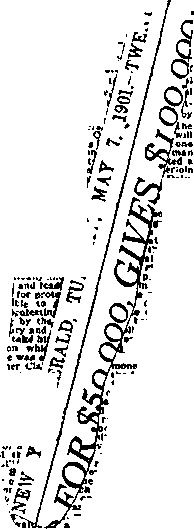

A JOURNAL OF FACT HOPE AND COURAGE
iiiimiiimiiimiiiiiimiiiiiimiiiimiiiiiiiiiiimiiimimiiiimiim
in this issue
CANADIAN NEWS FASCISM’S OPENING WEDGE AVIATION
MAN
JEHOVAH’S WITNESSES IN GERMANY
THE "LAST CONSISTORY” CREATION AND VINDICATION
iiiiiiiiiiiiiiiiiiiiiiiiiiiiiiiiiiiiiiiiiiiiiiiiiiiiiiiiiiiiiiiiiiiiiiiiiiiiiiii every other WEDNESDAY five cents a copy one dollar a year Canada & Foreign 1.25
Vol. XVII - No. 428 February 12,1936
«xa
■ - - — — 11 .gxa.»
SOCIAL AND EDUCATIONAL
God’s Providences in New Zealand 292
Fined for Remembering
St. Louis Police Must Be Polite
Jehovah’s witnesses in Germany, and Nearer Home
Foes of Constitution Observe It
FINANCE—COMMERCE—TRANSPORTATION Fuel for Five Years Ahead 297 Free Port on Staten Island 300 California’s State-Owned Railroad 301 Success of High-Speed Trains 301 Sixty Hours Flying Time to Manila 302 The China Clipper 302
Round-the-World Air Mails 302
POLITICAL—DOMESTIC AND FOREIGN
A New Zealander’s Disappointment 293 Peace Ballot in Britain a Success 293 A Pathetic Letter from Germany 295 Major Weigel in South-West Africa 295 The Demons in the Swine. 297
Italian Demonstrations Against War 297 Fascism’s Opening Wedge
Attack on Constitutional
The World War and the New Deal 299
SCIENCE AND INVENTION
Eighty-seven Typewriter Dialects 296
Old-Style Locomotives Must Go 301
HOME AND HEALTH
Osteopaths Up Against It in Britain 294
Aluminum Utensils in Turkey 296
One Reason for Insanity Increase 304
Aluminum Utensils in Restaurants 304
TRAVEL AND MISCELLANY
Condensations of Canadian News 291
Air Excursions to Isle of Wight
RELIGION AND PHILOSOPHY
Italians Control Last Consistory 308 “Organized to Commit Murder” 309 The Most Expensive Show on Earth 311 Coughlin Lines Up Behind Ratti 311 The Lady Missed the Show 311 Rome Afraid of the Movies 312 Catholic Daughters on Birth Control 312 Protestant Paragraphs 313
Spiritism in a Congregational Pulpit 314 He Got the Rings Back
• • oXe)• —" ■ ■ ■ --------- —-1 ■■■ ----——— • (cjHj.•
Published every other Wednesday by
GOLDEN AGE PUBLISHING COMPANY, INC.
117 Adams Street, Brooklyn, N. Y., U.S.A.
Clayton J. Woodworth President Nathan H. Knorr Vice President
Charles E. Wagner Secretary and Treasurer
FIVE CENTS A COPY
$1 a year, United States; $1.25 to Canada and all other countries.
Notice to Subscribers
Remittances : For your own safety, remit by postal or express money order. When coin or currency is lost in the ordinary mails, there is no redress. Remittances from countries other than those named below may be made to the Brooklyn office, but only oy international postal money order.
Receipt of a new or renewal subscription will be acknowledged only when requested. Notice of expiration is sent with the journal one month before subscription expires. Please renew promptly to avoid loss of copies.
Send change of address direct to us rather than to the post office. Your request should reach us at least two weeks before the date of issue with which it is to take effect. Send your old as well as the new address. Copies will not bo forwarded by the post office to your new address unless extra postage is provided by you.
Published also in Bohemian, Danish, Dutch, Finnish, French, German, Greek, Japanese, Norwegian, Polish, Spanish, Swedish.
Offices for Other Countries
British 34 Craven Terrace, London, W. 2, 'England
Canadian 40 Irwin Avenue, Toronto 5, Ontario, Canada
Australasian 7 Beresford Road, Strathfield, N. S. W., Australia
South African Boston House, Cape Town, South Africa
Entered as second-class matter at Brooklyn, N. Y., under the Act of March 3, 1879.
Volume XVII Brooklyn, N.Y., Wednesday, February 12, 1936 Number 428
Condensations of Canadian News
CROWDED out by the stress of events in Germany, Massachusetts, and Central Africa, 51 neatly typed pages of “Events in Canada”, by our Canadian correspondent, enough to fill a Golden Age, now demand attention. They must be condensed desperately, with the hope of treating the Canadians better at some future time.
They have discovered a new, picturesque and safer route from Hudson bay to Hudson strait. It will lengthen the navigation season ten days.
Tariff walls between the United States and Canada have broken down somewhat, to the mutual advantage of both countries.
There is serious talk of diverting the flow of the Nipigon river from Hudson bay to Lake Superior: the claim is that 392,000 horsepower could be developed at an expense of $3,000,000. This would raise the water levels at Montreal 1.4 inches and benefit all the Lakes.
Canada’s second largest business is caring for tourists from the United States. Wheat comes first.
The Government is getting after the Quebec hotels to bring them to a higher standard.
Canada will shortly have a Blue Book on its tropical, hot-water valleys in the Liard valley of the far north, where grass grows seven feet long.
Ambrose Small, Toronto theater man, disappeared in 1919, the next day after selling his theater interests for one million dollars in cash. His wife has just died, leaving the whole fortune to the Roman Catholic “church”, and it is supposed Ambrose was bumped off to make sure the church would get the swag.
Group hospitalization is being advertised widely in Canada; it is an arrangement whereby subscribers pay so much a week to a hospital fund. A confidence man in Vancouver stood up four surgeons in the same day for $15 each, on the ground that he wanted to have his appendix taken out immediately. He did not show up at the time and place agreed upon.
The Canadian kids have a paragraph of their own. Some of their answers to examination questions are: “Instead of ships going overland, they go by water, which is easier.” “Hemp is a kind of hair used on cowboys.” “The religion of India is the cask system.” “The people of China are Budests, and of Japan Budapests.” “Lines which join places having the same atmospheric pressure are called baritones.” “A continental shelf is a shallow body of water where fish come to spoon.” “Gutta percha is the chief beverage of the people of Brazil.” “Laura Secord was a notable woman clad only in slippers.” “The advantage of the Soo Canal is that boats can sail through it instead of having to portage around.” “Australia is a very fertile country because so many British people have settled there.” “The Saar is a piece of land that the Russian Saar owned.” “China has remained so little influenced by other countries because it is smarter.” “The chief seaport of Paris is Bologny.”
Concerning the epidemic of flag-saluting patriotism in the United States, the Vancouver New Herald said: “There are two ways to end such incidents. The one is to stop trying to build up synthetic patriotism; the other, to adopt a state religion and compel observance on penalty of the stake and the gallows. The first method is much more satisfactory than the second.” (And yet 22 of the ‘Idiotic States of America’ have fallen for the Roman Hierarchy plan.)
In Westmount, Quebec, where Jehovah’s witnesses have been arrested time and again, all workers in the district visited the city en masse, American style, called on the chief of police and the mayor, and placed 1,200 pieces of literature in the town, all without interference. A similar method was used in stopping the senseless persecutions in Ville St. Pierre (where two women
were sent to jail for ten days by one of Quebec’s rotten judges, without even knowing that they had been on trial).
Harry H. Stevens, former minister of trade and commerce, has made the official statement that twelve men practically own and control Canada, which, for that reason, is all ripe for Fascism.
Twice in seven years wounded geese have flown to the home of Jack Miner, Kingsville, where they had previously been treated kindly, and walked straight up the path to the front door, so that they might die among friends.
In a village in Manitoba there will be made a two-year test of a health insurance scheme in which everybody in the town will be given free medical care, free hospitalization, including surgery, and free medicine, all at the general expense of the taxpayers. Everybody will be vaccinated and serumized for diphtheria.
In three months Uncle Sam bought ten million bushels of Canadian wheat, “brain trust” plan.
The Vancouver Province thinks the Canadian government is making a mistake to suppose that young men will be willing to be herded permanently into old people’s homes for the young.
The Ontario government adopted an “Adopt-a-Baby” campaign, and in two weeks were out of babies, all the youngsters having found good homes.
The golden-eyed fishes of Lake Manitoba, accounted by some the finest eating fish in the world, are now almost extinct.
Persons convicted of crime in Canada no longer have the privilege of appeal to the British Privy Council. In other words, in a retrograde, priest-ridden province like Quebec the legal decisions obtainable are the last word until Armageddon.
Canada has made some shipments of hogs and cattle to the United States; a natural result of the AAA laws.
Canada has rulers galore: 96 senators, 245 members of the House of Commons, and 44,000 civil servants at and from Ottawa; in the provincial legislatures, 63 for Alberta, 47 for British Columbia, 55 for Manitoba, 48 for New Brunswick, 30 for Nova Scotia, 90 for Ontario, 30 for Prince Edward Island, 114 for Quebec, and 63 for Saskatchewan.
A Roman Catholic judge of Quebec ruled that a Protestant and Catholic when married by properly appointed officials are not properly married unless married by a priest. That is Roman Catholic Fascism, pure and simple.
Families on relief in Toronto are allowed $5.69 per week for groceries, meat, vegetables, butter, bread, and milk, for a family of five. Clothing is supplied. Shoes are repaired by city order. Water is paid for by the city; also light and gas.
God’s Providences in New Zealand
SAYS Carl W. Reichardt, of New Zealand: “The Golden Age is the only paper with any real news. I have just finished reading No. 411, and it was reading. Judge Rutherford’s address ‘Government’ sure was some address. If it isn’t the truth, well, I don’t know what truth is. I have read all Judge Rutherford’s books, about fifteen of them, the last five being autographed copies, and the way they explain the Bible, well, they make it as clear as daylight, and the sooner God’s kingdom under Christ is established, the better. I have been lending my books to my neighbors; several have taken notice and firmly believe what they say about God’s Word. One very good thing I have learned from The Golden Age: the articles on aluminum are the absolute truth. It is a funny thing how some people will take notice and others, well, I don’t know what to make of them; they won’t listen at all.
“I must tell you about a rather thrilling experience. I was down in Wellington for a day or two, and while there I met a friend of mine. While talking together about different things we got to discussing the Bible. I could see he had hold of the wrong idea, so I told him a bit about it. He told me to come out to his place, which I did. Well, he had a big Roman Catholic Bible there. I showed him a few things and he started to think then, but had to go out on an errand. While he was out I was wondering how to go on when he came back; I was wishing I had some of my books. While I was waiting a lady called at the door. The little boy went out to see what she wanted. Of course, he told her there was nobody home, as both his parents were out, so she turned to go away. While doing so she spotted me standing by the window, so she came back and said to the boy, ‘I want to see that man.’ I went out and as I saw what she was carrying I said to her, ‘You have got Judge Rutherford’s books.’ She looked at me as if she did not know what to say. I asked her if she had a full set of the books; she did not, but she would get them; her car was down the road a bit. She was not long getting them, and also booklets; so I made a present of them to my friend. He was pleased to get them. He knew all about the Catholic Hierarchy; he did not have much good to say about them. He said they were robbers and worse.”
NEW ZEALAND subscriber, an ex-service man, writes of his homeland disappointedly. First he encloses a clipping showing that in
Hollford Valley 250 men have camped four years in tents without floors, surrounded on all sides by millions of feet of timber, and with a sawmill only a short distance away. At times the snow is two feet deep around these tents. The subscriber wants to know why these 250 men have not been men enough to rectify these conditions, in spite of the numerous notices in the camp that any man taking a stick of timber will be dismissed and prosecuted. And then he sets down his own story as follows:
“One of the Roman emperors (a Caesar) once remarked that: If you gave the great mass of the people sufficient wine to drink, and circuses and bull fights and gladiator fights to amuse them, you could do anything you liked to them (or with them)—knock them down, kick them, abuse them, insult them—and they would stand for it. They are certainly like that in New Zealand today, still. If you give them a couple of glasses of beer, a tin of tobacco, and a free pass to a football match or a boxing tournament (even if you told them that there was no money and no food this week), they wouldn’t ‘buck’ at all; only grumble for a few seconds, and soon forget all about it, in the excitement of the prospect of seeing a ball game or wrestling match. No depth of mind, no mental ballast; like a ship with all sails set, but no ballast or cargo, and no one at the helm, at the mercy of every change of wind that blows. You can’t have much respect for them. Lots of coolies in Asia have more mental depth or ballast in them than lots of ‘poor whites’ seem to have. ’ ’
N S. J. League will be formed in New Zealand. Instead of being under the control of “Reverend” Charles E. Coughlin, it will be managed by “Reverend Father” Charles Higgins, who received his instructions from Mr. Coughlin. “S. J.” stands both for Coughlin’s so-called “Social Justice” and also for “Society of Jesus” [Jesuits],
AST season air excursions to the Isle of Wight were popular. Americans in large numbers made use of the time between their boat trains and the boats themselves, at Southampton, to hop to the Isle of Wight and enjoy its many interesting oddities.
THE London News Chronicle tells about the swell dressers at the Abbey church of Downside. It says:
“The eye was caught by the high white Roman mitre worn by Cardinal Seredi over his scarlet skullcap ; the long scarlet train of Cardinal MacRoy of Armagh [the same one that dodged the rain at the show in Sydney]; the brown habit and bare sandalled feet of the Franciscans . . . ; the superbly-enamelled and jewelled crosses on the breasts of some of the bishops and the white silk shoes of the abbot, with their exquisite gold embroidery, under his black cappa magna and its 14-foot train. The massed blacks of the 80 Downside monks threw into relief the vivid purples and reds of the visiting clergy.”
The British miners are desperately trying to get 50c per week more for their work, setting forth that on their present wages their entire earnings go for food to merely keep them alive. But no matter what comes, every girl in Britain will insist that the abbot’s white silk shoes, in their gold embroidery, are just too lovely for anything, and his 14-foot train was just too grand for words. Probably some of the halfstarved miners could supply the missing words, but they can’t get any such bad words published in The Golden Age—not on a bet.
RITISH people earnestly want peace, and said so pointedly when 11,627,765 men and women, 38 percent of all the residents of Great Britain over 18 years of age, voted in the peace ballot. Of this great number, 11,090,387 voted for Britain to stay in the League of Nations, 10,470,489 voted for reduction of armaments by international agreement, 10,417,329 for prohibition of the private manufacture of armaments by international agreement, 10,027,608 for economic pressure on one nation that insists on attacking another, and 9,533,558 for the abolition of national military and naval aircraft by international agreement. The vote is utterly worthless and impractical except as an expression of a real desire for peace and safety on the part of the voters. The governments will go along and do as they are told by the International Murderers, Limited, the real bosses in Britain as they are everywhere. What the people need, and their only possible relief from these intolerable conditions, is the kingdom of God which is about to destroy all the works of the Devil all over the world.
Tried Everything Else
By Mrs. E. M. Kerriush (Tasmania)
I FEEL I would like to tell you a little story.
About two years ago I had a little boy of nine very sick for about twelve months. He always had pains and was so sick we took him to three doctors. He did not seem to get any better. In fact, his knees began to give way and he could hardly walk. We were getting very worried and took him to the doctor again, who said he was afraid our son had paralysis.
One day Mrs. K., one of your workers, said, “How is your boy ?” I told her he did not seem to improve, with all the medicine he had taken. Mrs. K. said to me, “Now, what do you cook in?” Well, I thought that a strange question, as if that had anything to do with my son’s illness. I said, “Here are the pots and pans, all aluminum.” The lady said, “Well, if you want your boy to get better, throw all that wretched stuff out.” I thought it over and, knowing I had tried all I knew to help my boy, decided to try what cooking in iron pots and pans would do.
In a month from that day my boy was a new child. He lost his pains and was not sick, and his legs began to get the strength back in them. Really, it was wonderful. And from that day I have not used an aluminum pot, and never will. I proved it was slowly poisoning my child. In fact, the whole family was often sick after a meal, but since leaving off cooking in the wretched stuff we are all so different. I have your worker, Mrs. K., to thank for telling me about it. I am so pleased to see in this week’s Golden Age quite a lot about aluminum. Do tell the world about it; for it is deadly stuff. I thought you would like to hear from Tasmania from a very grateful person.
TT IS well known that millions of people believe that osteopathy is a method of healing which is as suitable for the treatment of diseases of any description as is any other method, yet in England recently the opinions of these millions were set aside as of no consequence; the osteopaths were to be investigated by a committee of their natural enemies, the allopaths; they were condemned in advance as being only 2,000 to 3,000 practitioners, only 170 of whom, in the opinion of those who know nothing on the subject, are “qualified”. Their one school in Britain was denounced before investigation as “of negligible importance, inefficient for its purpose, and, above all, in thoroughly dishonest hands”. It seems too bad that a few men whose own methods are so generally distrusted should be given the power to throttle the wishes of millions of people as to the methods they wish used to help them when they are ill.
The Bishop of Toronto
IN A four-page two-color leaflet bearing his picture and the text (sic) “Suffer Little Children to come unto me and forbid them not: for of such is the Kingdom of God” (Luke 18:16) the bishop of Toronto advises parents to have their children given the latest toxoid treatment, in lieu of the so-called “toxin-antitoxin”, now discredited. Parents should probably hurry up and do this before somebody discovers that the toxoid is just as worthless or evil in its effects as the toxin-antitoxin, but just why the bishop of Toronto should rush into print to misuse a text of God’s Word in a campaign to help out the serum-peddlers is hard to understand.
Vaccination in Australia
athaniel Andersox, in The Open Door, says:
“In Australia the parents do not believe in vaccination. They are 30 to 1 against it as a dangerous practice. No other country in the world, I am informed, has experimented in non-vaccination so enormously. In the whole of Australian history only three children have died of smallpox. I have heard of this, but for some mysterious reason the vaccinators in America have not, nor have the authorities who might stop the sale of vaccine as a very possible poison in the blood of the child.”
Old Recipe for Tapeworm
IN AN old doctor’s book appears the following recipe for tapeworm: Chew and swallow the bark of slippery elm, continuing at intervals until you find the head and pass no more joints. —Mrs. J. Howard.
Constable Reid’s Lonely Beat onstable T. Reid, Australia, has the longest and loneliest beat in the world; it is 300 miles from north to south and 252 miles from east to west, centering on the little town of Newcastle Waters. He has two native assistants.
British Airplane Factories Busy
RITISH airplane factories are so busy turning out military planes that no civilian can obtain delivery of a private plane.
A Pathetic Letter from Germany
APATHETIC letter from Germany says:
“The situation is getting increasingly difficult, and soon it may be impossible even to write a letter. Many brethren are in prison camps, and if Jehovah would not deliver them they would never come out. They are not permitted to have a Bible, are cut off from all studies, and cannot bring the truth to anyone. Nevertheless, there are faithful ones who are continuously active to feed the hungry ones, until they too are imprisoned. We all are continuously spied upon by our neighbors. Every eight to fourteen days the police search our homes, turning everything upside down, in order to discover forbidden literature. Where a trial is held, the public is excluded. I know brethren who were taken into custody and then were deported to a concentration camp; later a trial followed, after which they spent two or more months in prison; and at the end of their prison terms they have been brought again to camp, which they do not leave any more. ’ ’
NAZI “manhood” was exemplified in a Silesian town the other day, when a football match was held between German and Polish teams. One of the best Polish players was a Jew named Baumgartner. The Nazis threw stones at him until the play was suspended, and then rushed on the field and beat him to death. To a Nazi this seems noble and manly. The spirit shows in youth. At the French border a dozen German lads twelve to fifteen years of age rushed across the border and attacked a single French lad named Dannier, stabbing him repeatedly. What a wonderful country Nazi Germany is to live in! and what a grand land the United States will be when the Pashby-minded have fully ‘swastika-ized’ it!
Major Weigel, territorial group leader of the
Nazis in South-West Africa, wrote many letters which now make interesting reading in the office of the attorney general for South-West Africa. In one of these letters he said: “We must preserve the German character of the territory until it really becomes German again. Soon the Hitler flag will be flying in all streets even in the capitals of German South-West Africa.” Maybe that is just prophesying, but the attorney general invited Major Weigel and others involved to explain the source of their inspiration. South-West Africa is now British mandated area.
For Obeying the Lord Jesus
SAID the Koelnische Zeitung Stadt-Anzeiger, Cologne, Germany:
A 38-year-old man was a member of the Association of Earnest Bible Students, which has been suppressed by decree of the Secret State Police of September 28, 1934. Instead of obeying the law, the defendant held it expedient to celebrate, on April 17, 1935, in his home, the Memorial, together with his wife and her friend. The result was a charge for violation of the law. Brought before the bars of the Emergency Court, the defendant stated that he knew of the decree, but he did not consider himself guilty of a crime by celebrating the Memorial together with only two other persons. They simply ate of the bread and drank of the wine and read from the Bible. A similar testimony was given by the two women. The prosecution was of the opinion that this was a case of violation of the law, since the Bible Students as enemies of the State are prohibited to assemble themselves. The verdict was six weeks’ imprisonment for the man, and 150 marks fine for each of the women.
Fined for Remembering the Lord’s Death
THE Hannoverischer Anzeiger, narrating the sentencing of several of Jehovah’s witnesses to 200 marks fine each, or a term in prison, said:
The charge against them was that despite the law of the government, forbidding them all meetings, propaganda and teaching activities, they congregated on April 17, 1935, in order to celebrate the Memorial according to their own way. The state prosecution pointed out that those so-called meetings are nothing else than assemblies under disguise, and moved for prison sentences of three and two months.
There is no redress against verdicts of the so-called “Emergency Courts”, and neither revision nor appeal is granted. After pronouncement of judgment the sentence is immediately carried out by the executives of the state prosecution.
No Potato Bugs in Germany
IN Germany one is liable to punishment by law if there are potato bugs in his garden. It seems like a good law.
Herring for Fertilizer
THE British Herring Industry Board has decided that hereafter all herring not sold for human consumption will be turned into fertilizer and thus be made to render some return to those that catch them, and also be of some benefit to others. This surely seems like a more sensible plan than to throw them back into the sea or burn them, as was previously done.
Aluminum Utensils in Turkey
A DISPATCH from Trebizond, Turkey, says:
“Nineteen persons died and two were taken to a hospital after eating poisoned food at a gay picnic party today. The victims included eight women, six children, and five men. The food was cooked in unsanitary utensils, it is believed.” There is only one thing about this Aluminum Trust murder that is gratifying, and that is the absence of the usual hypocritical sentence that an investigation is under way to determine the cause. Every reader of The Golden Age knows the cause, but these highly paid and highly inefficient health authorities never will find the cause, because they are determined not to know it. As these aluminum utensil salesmen spread abroad over all the earth, and continue their boasts about what a perfect metal aluminum is in which to cook, these deaths will mount to staggering totals. By the way, here is a label of a box of sardines beautifully packed in aluminum. The next time you get a can of sardines at your favorite chain store, be sure to examine it carefully, for if you eat sardines packed next to aluminum and your wings don’t fit, don’t come bothering around here.
AT NOON, June 13, 1935, the new law went into effect making it illegal for anybody to wear ecclesiastical garb in public, in Turkey. This is probably a hard blow for the clerics, who love to wear long garments to deceive. The people are getting onto them, however. What a wonderful world it will be when Jehovah has done His “strange work” at Armageddon and the mountebank era will be for ever in the past.
THE last snow of the season, in a district 100 miles square in northeastern Turkey, was one inch deep, and of a brick-red color. It has not yet been determined whether the coloring was due to dust storms of red earth, or to pollens or swarms of insect bodies. All three of these reasons have been ascribed to red snows in the past.
TURKEY, like the rest of the world, is war-mad, and has given orders for the compulsory military training of children of both sexes. Five hundred airplanes will be purchased. The Dardanelles will be fortified.
Had to Stay in the Coop
ALL Turks had to stay cooped up in their homes until 3: 00 p.m., Sunday, October 20, while the census took place. The total number of Turks is about 20,000,000. Freemasonry has just been interdicted in Turkey, in accordance with the Devil’s general scheme of making the whole world Fascist and tyrannical.
MOUNT ARARAT, where the ark landed, is now in eruption, following violent earthquakes in that part of Turkey. It is estimated that 2,000 were killed in the quakes, with 1,600 houses destroyed. Mount Ararat is always snow-covered.
Mexico Now Able to Help the Poor
Reverend” G. A. McDonald, St. Louis Jesuit, in an address at the Jesuit University, as reported in the Star-Times, shows conclusively that the upset of the Roman Catholic Hierarchy in Mexico has been a great blessing to the country as a whole. In time past the Hierarchy crowd owned everything in the country, from the days of the archrobber Cortez down to those of Porfirio Diaz. But now, says “Father” McDonald, “the Indian peons, or poor rural element, are made to take over the confiscated properties the government has snatched from the Catholic population. . . . Formerly, the peon was accustomed to receiving a few centavos per day for his labor in addition to his board and keep. Now he says: ‘See! I make more in one week than formerly all year.’ ” “Father” McDonald grieves for the old days when the clergy had everything their own way. He grieves too late.
Eighty-seven Typewriter Dialects
THE Remington typewriter was invented in 1867. Mark Twain was the first author to prepare manuscript on a typewriter. The Remington company now makes machines that write in 87 languages and dialects, including Korean, Arabic, Hebrew, Siamese, and Persian.
Coughlin Not in Favor
IT IS of interest to note that Coughlin “expressed alarm at labor’s intention to seek a . thirty-hour week”. It must be that the thirtys hour week would really be a good thing for the people.
SAID Mark Twain, one of the keenest observers and castigators of hypocrisy:
“The loud little handful, as usual, will shout for the war. The pulpit will, warily and cautiously, object, at first; the great, big, dull bulk of the nation will rub its sleepy eyes and try to make out why there should be a war, and will say, earnestly and indignantly, ‘It is unjust and dishonorable, and there is no necessity for it. ’ Then the handful will shout louder. A few fair men on the other side will argue and reason against the war with speech and pen, and at first will have a hearing and be applauded; but it will not last long; those others will outshout them, and presently the anti-war audiences will thin out and lose popularity. Before long you will see this curious thing: the speakers stoned from the platform and free speech strangled by hordes of furious men who in their secret hearts are still at one with those stoned speakers, as earlier, but do not dare to say so. And now the whole nation, pulpit and all, will take up the war cry, and shout itself hoarse, and mob any honest man who ventures to open his mouth; and presently such mouths will cease to open. Next the statesmen will invent cheap lies, putting the blame upon the nation that is attacked, and every man will be glad of those con-science-soothing falsities, and will diligently study them, and refuse to examine any refutations of them; and thus he will by and by convince himself that the war is just, and will thank God for the better sleep he enjoys after this process of grotesque self-deception.”
The Italian people have just been through this farce, with a fair prospect of other nations following suit.
A DISPATCH from Halifax, Nova Scotia, tells of an interview with a Scottish shipmaster who recently passed through Suez and landed at Naples. He declares that among the Italian invaders of Ethiopia there have been many deaths, many cases of mysterious blindness, and that from some unknown fever men who were in sound health in the morning were dead in the afternoon. The shipmaster, John Smith, found the Italians in Naples afraid to discuss the war.
ALL Italy shivered over a gruesome tale of 14 Italian soldiers speared by two Ethiopian warriors; but the story was not allowed to get into the papers. So says Italian correspondence.
ITALIAN demonstrations against war have occurred at Parma, Leghorn, Siena, Palermo, Mauro, Corleone, Vittoria, Aeuasanta, Milan and Pavia. Mussolini spends much time muttering to himself and is alleged to have said several times that the probable end of his career is that he will die a prisoner on one of Britain’s desert islands. In order to keep the poor Italian suckers in line on the feast day of St. Januarius the so-called “blood” was “liquified” and within a few minutes crowds thronged the streets saying, “There will be no war.” That was on September 20. Within ten days the war had begun, showing that the “saint” (a heathen deity, by the way) lied.
THERE are family jars in Fascism. It is hard for two tyrants to get along together, even though they have found from experience that they can occasionally make good use of each other—for selfish ends. The pope had a holiday coming off on Monday, October 28. Mussolini did not want two holidays coming in succession; so he ordered all Italian banks and commercial establishments kept open on Sunday, October 27, and the pope nearly had a fit. He might just as well have had his show a day earlier, and let business go on as usual on the Monday in question.
ITALIAN railways bartered for a five years’ supply of coal from Poland. In exchange Poland received the magnificent 15,000-ton motor ship Pilsudski, and her sister ship the Ba-tory, now plying between the Polish port of Gdynia and New York. The barter price for the two ships was $5,849,700. They are believed to be the first vessels ever built on a barter basis. They were constructed at the port of Trieste.
THE Catholic Action Organization in Italy halted its program of social service on account of its interest in Mussolini’s war, and its eagerness to help him, in all possible ways, to make the most out of it. It confidently figures that the present stand of the pope by the side of Mussolini in his African venture will all be forgotten by the people when the anticipated profits of the Ethiopian campaign come rolling in.
Fascism's Opening Wedge
BEGINNING at once, the people of France must not speak disrespectfully of Hitler, Mussolini, Sir Samuel Hoare and other heads of foreign governments.
Calling Mussolini a “tyrant” or Hitler a “madman” will bring from three months to a year in jail, plus a fine of 100 to 3,000 francs.
Suppression of the public right to criticize public officials is a traditional entering wedge of Fascism.
The whole history of even minor abridgments of free speech shows that they invariably are followed by major abridgments of free speech, and eventual suppression of all minority opinion.
France has been ripe for the Fascisti for some time. The Croix de Feu, the French war veterans, have been militantly advocating a Fascist government, and Premier Laval, of late, seems to have fallen in with their schemes.
It would only be one step from a ban on criticism of Mussolini, Hitler et al. to a ban on criticism of any and all public officials. And it will be only one step from that to a denial of the right to criticize any act of the French Government.
Intolerance of minority opinion is necessary to Fascist rule. Based essentially on tyranny, suppression, intimidation, ruthlessness—it cannot stand the spotlight of an informed public opinion.
That’s why, when Fascism even gets one foot in the front door, democracy quickly goes out the window.
So it has been in Italy. So it has been in Germany. So it has been in Poland. So is it likely to be in France.
How plain the warning to America !—Philadelphia Record.
WHAT we are witnessing in Washington is far more serious than an attack on the Constitution only. It is an attack on constitutional government—an attempt to set up in its place and stead the converse and opposite of constitutional government; to replace the liberty of the citizen with the subjection of the citizen; to convert government the servant of the people into government the master of the people.
In short, its hardly disavowed aim is the complete reversal of the American conception of the relation between the state and the individual. The plain purpose is to depress the individual and elevate the state to a position of undisputed supremacy, although to do such a thing would violate every conviction that has characterized us since we became a nation.— Bainbridge Colby, secretary of state under Woodrow Wilson.
rpHE pledge to the flag, which has caused such a hullabaloo, was written by Francis Bellamy for the Youth’s Companion in 1892. That publication, which had such a great influence on the parents, grandparents and forebears of many of our present citizens, was forced to cease publication a decade or less ago, due to lack of patronage.
Members of minorities such as Jehovah’s witnesses and Quakers or Friends are law-abiding citizens. If we were all like them we would need few peace officers, courts and jails. They love this country and obey its laws. Respect for our flag and love for our country cannot be obtained by force, but by being tolerant to all religions.—The Frederick (Okla.) Press.
THE relationship between government and the press has always been recognized as a matter of large importance. Whenever despotism abounds, the sources of public information are the first to be brought under its control. Wherever the cause of liberty is making its way, one of its highest accomplishments is the guarantee of the freedom of the press.—Calvin Coolidge, in an address on January 17, 1925.
COMPULSION in patriotism seems sure to defeat its own ends. The perpetuity of this country and of its institutions does not depend on the forced salute of the flag or signing an oath of loyalty to the constitution. It depends on making those institutions function successfully to provide economic opportunity and civil and religious liberty.—Salem (Oregon) Statesman.
IS IT true patriotism that compels a citizen to stand and salute the flag contrary to one’s religious convictions'? It seems to us that it is destroying the very principles for which the flag stands—liberty and freedom.—D. E. Taylor, in Raleigh (N. C.) Reivs and Observer.
FROM 1780 to 1913 inclusive the expenditures of the United States Government were $24,521,000,000. During the four years of the World War the direct cost of U. S. participation in that supreme effort to provide the people with the “New Freedom” was $26,250,000,000. But the New Deal is still more expensive; to date it has cost $30,720,000,000, with contingent obligations of $9,400,000,000 more, making a total expense of $40,120,000,000. The pay roll has jumped from 644,000 employees to 729,769. The personnel of the armed forces and the 469,000 in the CCC are not included in this.
Getting Ready for Next Great Peace Conference GETTING ready for the next great peace conference, the United States started work on
23 war vessels, in addition to 62 aircraft carriers, light and heavy cruisers, light and heavy destroyers and submarines, already under way. Uncle Sam had to build all these war vessels to keep up with the quota which was set by the naval and military men at the London Naval Conference. If it were not for these peace conferences it might be necessary, in the interests of economy, to close up some of the shipyards and armor plate mills.
Simon Stucky, Hutchinson, Kansas, planted oats as a forage crop. Just as he was about to mow, heavy rains came on. As soon as the rains were over he mowed the oats anyway, but the Government came along, estimated his stack contained 560 bushels of oats, and burned both stacks because the oats were grown on contracted land. The result will be that Simon will have no feed for his 20 cattle this winter. Where Simon fell down -was that he neglected to regulate the weather.
IN AN address at Boise, Idaho, United States
Senator William E. Borah declared that while the last session of Congress imposed a tax of $250,000,000 on the rich it imposed $9,750,000,000 burdens upon the common man, where the great weight of government always falls. Cost of government has far outstripped increase of population and increase of national wealth, and taxes and indebtedness must increase now until the debacle.
Judge Eugene O’Dunne, of Baltimore, had before him two youths who turned over to the police an old copper pot containing gold coins of the value of $28,872, which they had found in the cellar of the rented home -where they lived. Claimants from all directions came rushing in to get the gold, which had evidently been buried before 1858. The judge awarded the money to the boys themselves. At the time of the find their families were on relief. Now each family will have a home of its own, and something besides, for the education of the boys.
THE State of Michigan charges its prisoners 70c a day for meals, and, if they have any money, makes an effort to collect. One young man, in prison for life for killing his mother, inherited $250,000 from her by his act. The death penalty for murderers is a divine provision which is ignored in the State of Michigan. One reason why there are so many murders in the United States is this maudlin sympathy for the killers instead of proper sympathy for their victims. Efforts to “improve” upon God’s law can have only bad results.
WHEN the old age pension law went into effect in Kansas City, a crowd of over 1,000, all over seventy years of age, stood in line for registration until scores were overcome from exhaustion. Many fainted and had to be given first aid. Large numbers were supported by crutches and canes. The Federal Government has made the surprising discovery that every fifth person on the national relief rolls is physically or mentally defective and unemployable even if employment were obtainable.
A DOCTOR with a sense of humor writes in from a certain midwestern state: “Here’s one for the book. A------politician was elect
ed to the state legislature at the last election. After the election he asked one of his fellow politicians for train fare to Washington. Said the second politician, ‘What in the h----do you
want to go to Washington for?’ Replied the first politician, Well, ain’t I elected to office?’ ‘But,’ said the second, ‘you must go to ------ [the
state capital], not Washington.’”
ST. LOUIS has a sensible chief of police. He has instructed officers to be polite to the citizens and taxpayers, and to cease altogether the rude, sarcastic, slurring remarks and mannerisms which, in so many cities, especially in New Jersey, have caused the citizens to hate those that ought to be the friends of all decent people. Why a man, when he gets into a uniform, must cease to be a human creature, is something no decent person will ever understand.
Joseph Connelly, gangster, went into Chinatown, New York city, and, displaying a detective badge, demanded money from Chin King. Chin took him for a walk to get the money, and for two blocks told every Chinaman he met that he was being held up. At the end of the second block two real detectives appeared and arrested Connelly, and then Connelly wished for the first time that he had known how to speak Chinese.
AFTER a series of assaults and robberies in
Central and Morningside parks, New York city, 505 were arrested, of whom 116 were found in need of hospital treatment. Fifty of the group were starving, and while the report does not say that any of the 50 starving ones were criminals, it appears very much as not a good thing to have too many starving men around at any one time.
Toy Guns Cause Crime
THE Kings County (New York) grand jury called attention to the fact that many burglaries and hold-ups are now successfully carried through with the use of imitation guns, and urges a prohibition of their sale. Who has not had his heart come up in his mouth at seeing children point at each other what seemed to be real weapons, or even have had them pointed at himself?
Gun Toters Now Betray Themselves
ANEW device, placed at a subway entrance, or other place where the people are passing through in numbers, will locate and identify those that carry guns, knives, files or other metallic objects on their persons, and they will not know that they have been thus detected.
DISPATCHES from Detroit represent Police
Inspector Hoffman as saying respecting the bombing of the Young Communists’ League in that city, “I’m glad they did it. Any red-blooded American would have been glad to blow the Reds’ place to bits.” Is that just the kind of language to come from an officer of the law? Are we to understand that “red-blooded Americans” are those who blow up places and people they don’t happen to like, so taking the law into their own hands? One instinctively fears that one of Hoffman’s own men did the job. At last accounts he was looking for the men who rented the place. But why?
A FTER years of discussion it is now decided there will be a free port on Staten Island where goods can be reshipped to foreign points without the payment of duties. Europe has had such ports for a generation, and found them exceedingly profitable enterprises. The area will be isolated, enclosed and policed under the supervision of Federal officials. Goods cannot leave this area for domestic use without being assessed the full customs duties.
NEW YORK CITY police will try to do something to curtail the destruction of property by boys. A property can hardly remain vacant any time now without half the windowpanes being stoned out. The boys gain access to the interior, strip it of everything salable, and all that can be done with it is to have it torn down before it falls on innocent children.
AMAN walked into a radio store in San Francisco, and, seeing nobody around, picked up a portable radio set and started for the door. An employee grabbed him before he got away; an electric eye had seen him come through the door, and buzzed the information to the workroom in the rear.
, Hell Holes to Be Cleaned
THE Alexandria (Va.) and Peekskill (N.Y.) jails are to be cleaned or else closed. At ■ Peekskill it was found that blankets had not been washed in three years, nor mattresses aired in twenty-one years.
California’s State-Owned Railroad
CALIFORNIA’S state-owned railroad connects the piers of San Francisco, which are also state-owned. The War Department says of this arrangement:
“San Francisco bay is the best harbor on the Pacific coast and one of the finest in the world. The large sheltered deep water area and a great amount of shore line offer almost unlimited opportunities for terminal and industrial water-front development. San Francisco is the only port in the United States where the waterfront is owned and has been developed by the State, and where, also, the public terminal developments have been connected with one another and with rail carriers by a belt line, owned and operated by the State. San Francisco is a shining example of efficient control of terminal and interchange facilities. There is no friction, no congestion, no delays at this port. Traffic moves to and from the piers with smoothness and facility, which is noticeably absent at some ports not adequately co-ordinated. The flat switching charge between any two points on the Belt Line serves to avoid the overdevelopment and congestion which tend to occur where ports are improperly divided into zones for switching purposes. In this respect, San Francisco is an example of efficiency which many ports would do well to emulate.”
The city of Cincinnati owns a railroad over 300 miles long.
TJIGH-SPEED trains are being put in operation on all the principal railroads, and with great success. Thus, the Burlington put on a high-speed train between Kansas City and Omaha. It replaced two slow steam trains that were losing money and is now running loaded each trip at less than one-fourth the cost of the steam trains displaced. The Diesel train weighs onefourth as much as the two steam trains displaced. Now that the railroads have awakened, the day of the bus is past, in a considerable measure.
UNTIL now the regular running time between Chicago and Portland, Oregon, 2,250 miles, has been about 60 hours. The new streamline train over the Union Pacific made its first trip in 39J hours, which is now its schedule six times per month. This is a tremendous advance forward, enabling businessmen who travel between the two cities, and prefer to go by rail, to get through with the loss of only one day between the two points.
Old-Style Locomotives Must Go
OLD-STYLE locomotives must go. General
Motors Corporation will soon be building Diesel-engine locomotives by the same methods in general use in building automobiles. The assembly line will be 500 feet long and 104 feet wide. The windows of the plant will extend around the building in an unbroken band. The plant, located at McCook, Illinois, begins operation November 1. Mankind has made much progress in material comfort and convenience, but none of these things have brought or will bring them real happiness until the kingdom of God establishes righteousness in the earth.
Irving L. Koch, Interstate Commerce Commissioner, points out that the people resented the tremendous increase in passenger rates made in 1920, with the result that by 1933 traffic had fallen until it was only a quarter of the 1920 business, and the average passenger wras traveling fewer miles on rails than in any previous period since 1880. The only possible way for the railroads to get their business back is to give the people the old rates of 2c a mile.
THE B. & O. is putting in operation a new
Diesel-motored electric streamlined train between Chicago and St. Louis which will make the 284-mile run in 5 hours flat, cutting the running time between the two cities by 1| hours. The center of gravity of the train is low; there is a combination lunch counter and dining car. A new coupling method eliminates all slack.
Railways Reduce Time to Chicago
THE Pennsylvania Railroad and the New
York Central Lines have cut thirty minutes out of the running time to Chicago, now making the trip of 896 or 980 miles in 16 j hours. The Central trains have to run much faster than the Pennsy to make it in the same time, but have no grades worth mentioning.
Faster Trains to Washington
rp HE Pennsylvania Railroad’s running time between New York and Washington has been reduced thirty minutes. The fastest train now makes the 235 miles in 225 minutes, and there are thirty-four trains that will make the distance in an average time of 250 minutes. The new electric service is superb.
Sixty Hours Flying Time to Manila
HUIE second outward trip from San Francisco with mail and passengers by airplane arrived at Manila, Philippine Islands, in exactly the same flying time, 60 hours 4 minutes, as was required by the sister ship two weeks previous. The Commonwealth of the Philippines was inaugurated by proclamation of President Roosevelt, and took effect November 15. In ten years, if nothing happens, the Philippines will be entirely free. In the 37 years of American domination the United States set up 5,534 schools, by contrast with the 2,000 which Spain set up in 300 years, with the result that the Philippine standard of living is three times as high as that of the Japanese, Chinese and Malayan neighbors.
THE China Clipper, first regular mail plane across the Pacific, carried 110,000 letters (nearly two tons) and covered the 8,110 miles from San Francisco to Manila in 60 hours 4 minutes of actual flying time. The ship stopped over night at Honolulu, Midway, Wake and Guam en route, and so took five days to make the trip. The clipper carries a crew of seven. When operating on the long hop to Honolulu she has berths for seventeen passengers. Beyond, the trips are all by daylight and there are convenient accommodations for 43 passengers. There are four engines; the wing span is 130 feet; the over-all length, 89| feet; the height, 24 feet; high speed, 179 miles per hour.
rpHE Royal Dutch air lines, and also British and French air lines, are expected to connect with the Pan-American Airways at Manila and Hong Kong, and thus to provide air mail service around the world. The Pan-American line will inaugurate the service with a weekly mail from San Francisco to Canton, China. At first the planes will carry 800 pounds of mail, at a charge of $2 per mile and $1 per one thousand miles for each additional pound.
Around the World by Air
CONNECTING with the American air lines at Manila, in the Philippines, it is expected that air service around the world will be in effect in the very near future, possibly by the time this issue of The Golden Age is in the hands of its readers. There are unlimited funds in the hands of the projectors, and years of experience.
An Extraordinary Achievement
ONE of the most extraordinary achievements of all time was the flight of the China Clipper from San Francisco to Manila and back in 122 hours 42 minutes of flying time. The engineers, working for five years on the plan, had set a flying schedule of 130 hours.
TT IS not so safe to go racing through an elec-trie storm in an airplane. In the Arabian desert a Dutch plane crashed. An examination of the wreck disclosed that the seven persons on board had all been killed by a flash of lightning before the fall of the plane occurred.
THE Graf Zeppelin, now eight years old, continues to ply between Germany and Brazil, while the United States continues to remember the Shenandoah, the Macon and the Akron and to wonder why it is that Germans can do what Americans are unable to do.
rpO PREVENT ice from forming on the edges •*. of airplane wings, and thus causing accidents, a rubber overshoe now fits over the edge and is alternately inflated and deflated, cracking off the ice crystals as rapidly as they form. This invention will save many valuable lives.
ON THE fourteen-mile vertical trip into the stratosphere pictures were taken showing the horizon 300 miles distant, and showing plainly the lateral curvature of the earth.
ANEW line of seaplanes, London to Durban, is projected to supplement the nine-day overland air mail line. The new line will travel via the east coast of Africa, and is expected to make the journey in four days.
FIFTY years ago William H. Jackson journeyed from Salt Lake City to Yellowstone Park; the trip took him thirty days. Lately he made the journey by plane. It took him three hours.
Old Age Pensions for Indians
Most Surprised Man in Fort Scott
AMONG interesting items brought out at the
Senate hearings on old age pensions for the Indians was the fact that only in New York State have the whites ever honestly fulfilled any treaty made with the Indians. Even at this late date 18 percent of the Indians are homeless. Many of them are compelled to depend upon garbage dumps for means to live at all. Old Indians have been known to come to Indian agents on their knees, seeking food. Tuberculosis is common. The doctors often go away and leave them to die in places where there are no chairs, no tables, no dishes and no food. The Indian agents are for the most part absolutely heartless. The whites take advantage of the Indians in every possible and conceivable form. If an Indian has good lands the white tries to get the lands away, and has been known to pay largely in notes unsecured, non-interest-bearing, nontransferable, and therefore worthless. The Indians are the personification of kindness and generosity toward the helpless among their own people, and never turn anybody away, white or Indian. Reverend Heuel testified that he has an affidavit where an Indian agent stole every month $1,500 from the meat allowance for the Indians, by means of true weight bills and false weight bills. He told of where one family of 12 people got 6 cans of milk to last them an entire month. On the La Jolla (California) Indian reservation one old lady 10G years of age slept at night in an ash pit, that being the only warm place she could find. Thomas L. Sloan, an Omaha Indian, tells of a family of Indian farmers who were capable and honest men, living practically like white people, and rented out some of their land, who were compelled to go to an agency and trade with their trader and were charged at least 100 percent more than they had been paying at the town store where they had been trading. They were also compelled to make their leases of land through the Indian Office, instead of being permitted to handle this matter themselves as they had been doing in an entirely satisfactory and efficient way. He stated that “by the restrictive imposition of rules and regulations which changed and prevented a natural development in the course of their lives”, the Indians had been prevented from making progress. The Indian sums it all up in his philosophy: “White man no good: lie too much.”
THE most surprised man in Fort Scott. Kansas, was the Arkansas Negro who went to sleep in a shed. During the night the shed took fire and burned down, but the Negro slept soundly through it all, awoke in the morning, and crawled out of the ashes unharmed. Something akin to his surprise awaits the millions who were buffaloed into believing that when they were dead they would be in “purgatory”, and who, when they awake, in the resurrection, will find themselves right back where they went to sleep, and then realize how awfully they were deceived. Meantime, too, the old house of their deception will be for ever gone.
ON THE Independent Subway System of New York, from the first day of its operation, there has been an average of 1,575 bogus slugs daily dropped into the turnstile slots. Does it seem possible that so many people would risk a term in prison for so small a theft? The slugs cost probably 1c each; so the amount of the theft can be only about 4c in each instance. 1,560,000 of these bogus nickels, along with 4,000 guns of various types, 450 slot machines, and 200 knives, blackjacks, brass knuckles and sabers were recently taken up Long Island Sound and dropped in 150 feet of water.
THE first loop of youth hostels in the United States has begun service in New England.
It begins at North Hadley, Massachusetts, and extends 400 miles through the finest scenery of New England. Fees are $1 a year, 25c a night at each hostel, and the cost of food, ice and wood. Each visitor must bring a sleeping sack of two sheets sewn together. Visits are for one night, prolonged to three in case of rain. Information can be obtained from the National Park Service of the United States Department of the Interior, Washington, D.C.
'V'OUTH hostels are now to be found in eighteen European countries. Young men and young women may walk or bicycle all through the most interesting parts of Europe and stay at night in one of 2,000 buildings where all their needs are cared for at minimum expense.
erald Barry, prisoner of the Lord for two months in Quebec, found the prisons tolerable as respects food, exercise, cleanliness and discipline, but made one point worth publicizing : “The principal difficulty with the food was that it was cooked in aluminum. This, of course, was not the fault of the authorities, but is due to a lack of knowledge on the subject of aluminum. The writer was quite sick for one week while in prison, which was doubtless caused by the food’s being cooked in aluminum. While the commission which the Lord’s people have received is to preach the kingdom of God, and to declare His judgments, to which they must be completely faithful, if they would have His approval, yet the explaining to the people that food cooked in aluminum vessels is very detrimental to health is certainly in line with doing good unto all men as we have opportunity. The people are in great need of information on the subject of aluminum, and seemingly they will not get this information through the channels of the Devil’s organization.”
DISPATCH from Lake Preston, South Dakota, tells of the poisoning of Mr. and
Mrs. Oliver Gerald. According to the doctor’s diagnosis they were poisoned by chocolate sauce served on ice cream, but the account goes on to say: “The chocolate sauce had set in an aluminum pan over night, and it is thought the chocolate reacted upon the aluminum.” Every reader of The Golden Age knows what happened. All they are wondering at is how the Aluminum Trust let that word “aluminum” slip through and get on the wires. Somebody will get it for that.
INDIANAPOLIS, where 200 were poisoned recently by food packed in aluminum containers, has just had another poisoning case, where 72 prisoners were made ill after the noon meal. The sheriff put the blame on tainted flour made into gravy. The toxicologist “was called in to examine the food”. Every reader of The Golden Age knows full well what caused the poisoning, but if a “toxicologist” were to tell the truth about aluminum utensils he might get a job as a farmer, but no more toxicology jobs after the Aluminum Trust got on the job.
AYS H. J. Force, Ph.G. (for twenty-five years chief chemist of D.L.&W.R.R.):
“Aluminum paint should not be used on roofs from which drinking water is obtained. The system is able to take care of a small amount of poisons, but there is a limit, and when that limit is passed poisoning is liable to result. Aluminum appears to have the property of eliminating iron from the system, also manganese. These two elements act as catalyzers in causing the absorption of calcium into the system: if the calcium content becomes too low an anemic and insomnia condition follows which may lead to mental derangement. Aluminum poisoning causes a deformation of the brain cell tissues. If this is extensive serious derangement follows which may finally result in insanity.”
TT BECOMES more and more difficult to es-J- cape the dangers of aluminum poisoning when eating in restaurants. Like as not the steak will be served on an aluminum sizzling platter, to keep it hot. According to information at hand, at least 8,000 restaurants now use these aluminum sizzling platters. Scoops, ladles, pitchers, lime squeezers, frying pans, roasting pans, etc., etc., are made of aluminum. Restaurants are now supplied with buffers to keep the aluminum, which discolors quickly, looking bright and new. It seems as though the first thing to do when entering a restaurant is to find out whether aluminum is used.
a. C. T. Betts, of Ohio, well known to Golden Age readers, has investigated most forms of cooking utensils. He does not think well of copper, aluminum or galvanized utensils, but has a good opinion of enameled ware and the Allegheny steel utensils manufactured by LaLance & Grosjean Co., Woodhaven, N. Y., the Savory Company, Buffalo, N. Y., and the Carrollton Metalcraft Corporation, Carrollton, Ohio.
A Dancer Toying with Death
orothy Evans, Seattle dancer, makes her living covering her body with aluminum paint and dancing for ninety seconds as a silver nymph on the stage. In an interview with a Seattle Times reporter she said :
“If I leave it on longer than two minutes it starts to blister, burns my skin like fire. . . . After a while it seeps into the blood stream and poisons the entire system. It killed a couple of girls I know.”
A five-minute talk
by Judge Rutherford
THE Bible furnishes the correct information concerning the origin of man, his course, and his destiny. Adam, the first man, was created by the Lord from the elements of the earth. That man was perfect. God endowed Adam and Eve with the power to conceive and bring forth children and thus to fill the earth with intelligent creatures. Before they exercised that power they were guilty of willful disobedience, for which God sentenced them to death and expelled them from Eden their perfect home. Thereafter all the offspring of man, as stated by the Scriptures, were conceived in sin and born in iniquity. (Romans 5:12; Psalm 51:5) Adam willfully preferred to obey the Devil and to disobey God, and for that reason he fell. Disobedience to God’s law always brings disaster upon the wrongdoer.
Punishment for willful disobedience is death. Man is a mortal creature, meaning that he is subject to death. (1 Corinthians 15:53) The Devil has induced men to believe the false doctrine that man has an immortal soul. The Scriptures show that man is a soul, meaning that he is a breathing, living creature. (Genesis 2:7) It is written at Ezekiel 18:4: “The soul that sin-neth, it shall die.” The facts support the scripture that men die and that the death of man is because of sin.—Romans 6: 23.
Since all men are the descendants of Adam, the sinner, does that mean that ultimately all men will perish ? That would be the final result unless God provides a way for the recovery of man from death. It is written, at Romans 6: 23, that life is the gift of God through Jesus Christ, and, at Acts 4:12, that there is no other name whereby men can be saved and gain life. Before man can receive the gift of life he must learn what God requires him to do. That which is required is set forth plainly in the Bible, which God has provided for the guiding of men in the right way. The books Creation and Reconciliation will enable you to find all the Bible texts bearing on this subject. The fundamental truths there fully considered are here stated in brief, to wit: That God made provision for the redemption of man by providing that another perfect man might die as a substitute for or in the place of the perfect man Adam, who sinned; that there was no man to meet that divine requirement; that God then made the man Jesus a perfect man, a little lower than the angels, that He might suffer death in the place and stead of the sinner, to redeem sinners. (Hebrews 2:9) The man Christ Jesus fully proved His obedience to God under the greatest trial and suffered an ignominious death as a sinner. Because of His full obedience God raised up Jesus out of death and made Him the author of eternal salvation to all who believe on, serve and obey Him. Christ Jesus is now fully possessed with power and authority to give life everlasting to every person that truly believes on Him and faithfully serves Him and God. Everlasting life of man is the gift from God, and whether he receives and holds to this gift depends upon his faithful obedience to God. The great sacrifice of Christ Jesus is for the benefit of all those who do so believe and obey. All others will perish for ever, as it is written: “He that believeth on the Son hath everlasting life; and he that believeth not the Son shall not see life; but the wrath of God abideth on him.” (John 3:36) Man’s greatest privilege, therefore, is to know and to serve God and Christ Jesus, as it is written: “This is life eternal, that they might know thee, the only true God, and Jesus Christ whom thou hast sent.” Jehovah’s witnesses, in obedience to the Lord’s commandment, are trying to help men to gain that much-needed knowledge by bringing them in contact with the truth.
It is written, at Proverbs 3:13,14: “Happy is the man that findeth wisdom, and the man that getteth understanding; for the merchandise of it is better than the merchandise of silver, and the gain thereof than fine gold.” Gold and all material things bring no lasting happiness. The correct understanding of man’s relationship to his Creator, and what is man’s future, is of greatest importance to him. Not all good men go to heaven. In fact, a very few will ever be in heaven, and those are the ones whom God places in His royal house. The home of natural man is the earth. God created man for the earth, and the earth for man, and those who obey the Lord will live on the earth. Under the rulership of Christ Jesus all wickedness and selfishness amongst men will be destroyed and those who love righteousness and do right will inherit the earth. It will be a real pleasure to live among neighbors that are kind, considerate and always doing right. It will be a real joy to live when the people know that all crime has ceased, and that sickness and death will never affect them again. Then, as it is written in the Psalms, every creature that lives will be praising God the Creator, who is the Giver of all good things.
[The series of Bible talks of which the above is one may be obtained in the form of phonograph records from the Watch Tower Bible & Tract Society (Brooklyn, N. Y.). These records may be used on an ordinary phonograph. They are an excellent means of calling important Bible truths to the attention of others, providing material for discussion that is both profitable and interesting. Inquiries concerning the records should be addressed to the Society, and not to The Golden Age.]
rpHE Koelnische Zeitung Stadt-Anzeiger, Cologne, Germany, in its issue of October 5, 1935, tells of one of Jehovah’s witnesses, active in proclaiming God’s kingdom from door to door, despite prohibitions to the contrary. The account says: ‘‘When he appeared before the court in Dortmund he refused to give the German salute, ‘Heil Hitler,’ after having been expressly instructed to thus salute by the police court sergeant.” He was given eight months in prison and sentenced to three days more in jail for refusal to give the German salute.
(Translation from the National-Zeitung, Basle, Switzerland)
AT FIRST sight it seems strange that such a harmless religious society as that founded by the American Russell, called “Earnest Bible Students”, or, as they call themselves now, “Jehovah’s witnesses,” should be persecuted so much by the “Gestapo” [Geheime Staats-Polizei —Secret State Police]. We are informed that there are still about 1,500 of these God-fearing and good people in prisons and concentration camps. In August 1933 their writings, including about 400 Bibles, real Bibles, were burnt by the Nazis near Magdeburg. (Seein Langhoff’sMoor-soldaten the pointed description of the strange treatment of the Bible Students by German officials [authorities].)
However, when one knows that this sect has from one to two million friends and adherents in Germany and that the Earnest Bible Student, based upon the certainly unequivocal word of the apostle, ‘We ought to obey God rather than men,” declines the “Heil-Hitler-Gruss”, then one understands that it was an unpleasant thing for the founders of the “Third Reich” to see these Christians among them and that such attitude led to prohibitive measures, suppression and persecution. They discontinued their official meetings, but—is it not written that “where two or three are gathered together in my name, there am I in the midst of them” 1 And did not the first Christians in Rome secretly meet in the catacombs in the same spirit in spite of Nero and in spite of the prohibition of their meetings by the Roman “Gestapo”? So the Gestapo have their trouble with the Bible Students and on the 17th of December there begins in Halle a big lawsuit against the imprisoned leaders of the Bible Students, Balzereit and Dollinger, because of activity inimical to the State. As an excuse for the persecution of these “heretics” (as this term is used by the National Socialists), they have been charged with being under Jewish influence, which is entirely wrong. The Gestapo has closed their printing plant, which printed their paper Golden Age and their tracts. However, they are allowed to ship the machines abroad. The technical manager, Joh. Meier, a Swiss, recently went to Basle in order to meet there his English and American brethren and to liquidate the German business of the Watch Tower Bible & Tract Society. Before his arrival in Switzerland he had the misfortune that the Gestapo took away from him all the papers which he needed as vouchers to settle the accounts. The persecutors seem to be more afraid of the persecuted than vice-versa.
MT WANT to tell you of a poor colored man and his wife down in the woods of Richland, N. J. Their home was one room about the size of a small woodshed. The man was blind. On a couch lay his sick wife, who had been paralyzed for two years. Thinking his home was a small workshop, it was nearly overlooked by Jehovah’s witnesses. The old man asked, ‘Whose work is this that you have?’ When told about Judge Rutherford and the Kingdom, he cried out, ‘May the good Lord bless his soul: I have just heard him.’ Upon looking around and seeing no radio, the J.w. asked, ‘How did you hear Judge Rutherford?’ The blind man pointed to a table. On the table was a cigar box; in it two tubes. He listens regularly to the Watchtower programs. Jehovah knows how to feed all the sheep.”—Mrs. Leon Kendall, New Jersey.
IN THE reminiscences of Dr. Fritz Roesch is found a gripping illustration of the words of Jesus that He is “the door of the sheep” (John 10:7). He tells of observing the life of a shepherd while traveling in South Algeria. The sheep stalls are merely open huts, enclosed with a low fence or surrounded with thorny or cactus bushes. At night the shepherd stretches himself out on the ground, across the entrance, and thus closes the ingress with his own body. He literally thus makes himself the door. Jesus manifestly had this illustration in mind when He at the same time called himself “the door of the sheep”, and “the good shepherd” who “giveth his life for the sheep”. At any rate, He interposed himself for His own sheep, and for their sakes suffered at the hands of thieves and robbers. (From the German Golden Age)
TR. Weeks, pioneer, reports that he was • turned away from a door with the information that there were no more houses on that road. Unconvinced, the witnessing party went on, and in the next house found great interest in the truth, placed six more books and a year’s subscription for The Golden Age. The Devil has the representatives of his kingdom everywhere, eager to do what they can to stop the spread of the truth. When a person volunteers information about neighbors it is a safe rule to turn the facts other side up.
< ‘Ncivics teacher asked the
LN class to stand. Jeanette, not knowing the cause, obediently stood, but when she found it was to repeat the pledge of allegiance and salute the flag she remained motionless, the only one in the entire Junior High. The teacher asked her if she did not know the pledge, and she replied, ‘It isn’t that; I just cannot salute any flag, because it is against my belief in God.’ The teacher, with a surprised and embarrassed smile, answered, ‘Oh, all right.’ Some of the children in the room, being curious, asked Jeanette questions, and she grasped the opportunity to witness to them regarding the Kingdom. It resulted in one girl’s exclaiming, ‘Oh, my mother takes The Watchtower and we have been wanting to get in contact with some of the witnesses so we could go out in the witness work.’ They were over to our house bright and early the next Sunday morning, and now go out with us at every opportunity. About a week after this the same teacher included in the civics examination the writing of the pledge; so instead of ignoring it Jeanette substituted a pledge of her own as follows: ‘I pledge my allegiance to Jehovah God and His righteous kingdom under Christ.’ The examination papers were returned with the pledge marked ‘O.K.’”
SS. Goodin, pioneer, in southern Illinois,
• writes of Henry Dietrich, a Jonadab. Dietrich came out of the Evangelical church when he got the truth. Shortly afterwards he had a stroke which kept him in bed for a year. Allegedly, it was a judgment on him for leaving the church; it also gave him a chance to participate in the reproaches that fell upon his Lord and Master. After a year in bed he was able to get about in a wheel chair. One of the first things he did as soon as he was able to move about was to cut out the petition blank which was published in The Golden Age, and go around and get it filled and join with His witnesses in his battle for the truth.
Dona Felker, auxiliary, Colorado, called at a home and received the following most unusual blast: “No; we are Catholics. We don’t talk to you. I have a drunken husband that I must keep my eye on. All Catholics are drunkards, you know.” And slam went the door!
(Translation from Neues Wiener Abendblatt, Catholic newspaper of Vienna, Austria)
ROME, December 6,1935.—On the occasion of the publication of his decisions regarding the modalities of the coming consistory, the pope, we learn from a trustworthy source which is in close contact with the lobbies, remarked significantly: “Questo sara il Nostro ultimo con-cistorio.” (“This will be our last consistory.”) From this we may conclude that the pope does not intend to have the two seats remaining vacant in the holy board occupied even in later times. On the other hand, it is true that for some time the pope’s health has been less satisfactory and that it is influenced by ailments which are the natural consequences of his advanced age. The will of making provisions for a long time ahead has always determined the measures taken by the present pope. This intention is seen again in his comprehensive dispositions regarding the coming consistory, which were a surprise to all the ecclesiastical and political circles in Rome, since the pope, against the desires of a certain part of the Board of Cardinals, for months past was little inclined to confer the cardinalship to new princes of the church.
Therefore, the consistory called for the 16th and 19th of December will also be of particular importance for political reasons. . . . The number of cardinals will be increased from 48 to 68, so that but two seats will remain vacant. Only six of the new cardinalships have been conferred upon non-Italians. Therefore, the proportionate votes will be 37 Italians against 31 foreigners. Even if the two vacant places were occupied by foreigners, this would not mean parity, to say nothing of a majority of the foreigners. The majority in the holy board is thus secured to the cardinals of Italian nationality and therefore also the tradition, that the new pope to be elected some time later be of Italian nationality.
. . . With Father Boetto the Jesuits are again represented on the Board of Cardinals. With the death of the German cardinal they had had no seat. The fact that this seat has not been occupied again by a German ecclesiastical lord has caused ill-feeling in Germany, as well as the fact that Germany has been entirely overlooked in the present appointments of cardinals. . . . South America has now two representatives on the Board of Cardinals, one for Brazil and one for Argentina. . . .
During recent weeks the relationship between the Vatican and the Italian Government has become most intimate. The clear attitude adopted by the Italian princes of the church in favor of the purposes of the Italian Government and the Italian nation in the East African conflict has essentially helped to this, yea, even decidedly influenced this development. Only a few months back the pope showed himself less friendly towards the position taken by Italy against Abyssinia [Ethiopia]. However, the Vatican has now taken into account the currents in the Italian episcopate. A great change of policy has now taken place in harmony with the views of the Italian cardinals and bishops. From the same source we learn that the Vatican has acquired big lots of shares of the electrification of the railway lines Rome-Florence and Rome-Naples (for one billion liras, it is claimed), and has transferred to the Italian Government part of its assets in foreign currencies and securities abroad. In all the Italian dioceses it is strongly recommended from the pulpits that the people patiently stand the war of sanctions and deliver their gold. Practically all the Italian bishops have already handed their golden neck-chains to the Italian Government. These are the exterior tokens of the now very intimate relationship between the Vatican and Italy. Less visible, but all the more important, is the fact that the Vatican has offered the Italian Government to support it diplomatically in all the capitals of Europe. A sure foundation for the continuity of this course of the Vatican will be the Italian majority in the Board of Cardinals as created by the appointment of 14 new Italian cardinals. This increases the political importance of the coming consistory beyond the limits of the church politics proper.
THE Universal Christian Council, an aggregation of many “Protestant” denominations, meeting at Montreux, France, sent telegrams to Pope Pius, the League of Nations, and the governments of Britain, France, Italy and the United States, urging that the war between Italy and Ethiopia be staved off, and stating that the League of Nations has their wholehearted support in its effort to prevent a violation of the Kellogg-Briand pact. The Protestant Federation of France is one of the units of the Universal Christian Council.
“Organized to Commit Murder”
THE archbishop of St. Paul has issued an order that all Catholics in his diocese must withdraw from organizations supporting birth control, as such are “organized to commit murder”. This is especially interesting in view of the declaration of “Reverend Father” Harney, of the Paulist Fathers, that as soon as the Catholic “church” is strong enough in America it expects to launch out in the murder of Protestants in a wholesale manner.. Looks like the pot calling the kettle black. What the archbishop fears is a letup in the production of “Purgatory” victims ; what the women are interested in is not having more children than they can feed and clothe. Contraception is not murder except in the eyes of an ecclesiastic who is out for the shekels. Let no one suppose that the Roman Catholic Hierarchy ever was or ever will be interested in the welfare of the common people. Look at what they didin Spain, Mexico, Central America, and South America.
John Francis Daniels, M.A., one of the editors of Wisdom, broadcast an attack on the New York World-Telegram for printing an account of the work of Judge Rutherford and his associates. On the advisory board of Wisdom is the “Very Reverend” John B. Harney, C.S.P., the same who said, in effect, that as soon as the Catholics feel strong enough they intend to murder all the rest of the people in the country. One wonders that Mr. Daniels did not think of this simple way of getting after the World-Telegram, but it may be that, for the present, the subtler, but equally devilish, methods of boycott and vilification would better serve the Hierarchy’s ends. Mr. Daniel’s address is 32 West 60th street, New York city. He may, if he chooses, send you the address delivered November 11, 1935, over WLWL, attacking the World-Telegram for daring to mention Judge Rutherford.
..... « •vf'r. i'au \.u<»nri
**Ak u result of our pressure on every aide
.aRGOI^P'RICHTLY DEATH liRFEII A7?
arke, Feeling /"^New Brunswick (N.J.) Priest iction, Belie/A-< | gays Catholics Would Thus
e Left the C'£
{amblers capfui* rlfteen's nenaatl are aumtruned
rambler friends t enly a the Com-Id on his
been driven liar bad been search of that him and to
/Paly, k were I sport*
or dur*
street, he prominent thia city politician demanded continued
his name, and i , under whichJ rliam Travers/ ae Criminal
This man Is t gamblers ii een or (went juse in the. >4 Acre only sucto ansom and ot/ t as gamblers, ition. / Clarke has tj ng sad varW I fortunes. / 'T ie has not if * ago. aft*/ Q Fifteen s rf No. IM W/ & Jtany .tnd **»
an to nt
•» it* i, and/ staicx
ey from the the fact remains from Ma usual caretaker pf his arke to away out not know where return or when he 4 irone.
lied by the Com-venlng of February »« a cheap faro roulette wheel and ever, whispered Into
—- — bl* repeating on the -night of Maren arching the floor. be dis, raised it aitd brought to l collection of gumbllng 'a as exists in this dty.-
'‘uinnu
New
FOR HERETICS”
Stop Spread of “Errors,
“t do not doubt. If they were strong enough, that the Catholic people would hinder. even by death if necessary, the spread of heretical error* among the people, and 1 Bay rightly so."
Thto was the statement made by the Rev. Mr. Harney, a Paulist Father in St. Peter's Roman Catholic Church, in New Brunswick, N. J., Friday evening. The Paulist Fathers have been conducting a mission for the. last three weeks tn that church. Last week the services were for the benefit of non-Cstho* lies.
A feature of last week's services was • "question box." This question was road by Father Harney on Friday night:—
"Does the Catholic Church regard Protestants pH heretics, and does it not believe and teach that heretics should be punished, even with death if necessary?"
Father Harney's answer was:—
does consider Pretestants heretics, in a way. A formal heretic is one who knows he is perverting the truths of God and the Cath, ©lie Church. No man. by sinning himself, should be allowed to lead others into sin.
'•I do not doubt. If they were strong enough, that the Catholic people would hinder, even by death If ne^eesarj. the Spread of such errors through the people. And 1 say. rightly so.
"As human society'protects itself against the murderer and the mpn who proves a traitor tb the government, so the Church of God has the right to nmteet Itself. The Catholic Church never dreamed of punishing one who is materially a heretic—one who believes thing* to be true that ait not true— any more than a father would punish his child- who does wrong unintentionally. The history of the church bti been a history of toleration.
'"Ph*'Catholics have proved mor* tolerant Chan the Protestants."
In an interview last night. Father Haney stated that his remarks on Friday evening, a* above quoted, were correct. He aald Jhey expressed bls personal convictions and were in acoord with those of tb* Catholic Church.
HHivm cuiddiv
WHO but the Devil could see any good to come from locking 14 women in a place which they may never leave until carrried out in their coffins; where they will be fed by means of a revolving drum, will walk barefoot, will have only coarse sackcloth to wear, and will not even sleep properly, because their beds are built on a slant so they can only recline? This happened at Nottingham, England, October 15, 1935, when 14 Sisters of Poor Clare were locked in their dungeon by the “Right Reverend” Bishop J. McNulty. One was a girl of 19.
Ac
Rest the S< were’ of N* tlon ’ the d be M
Th> Geo: the I
bo tn
In Cor Gol 8 nt prof are Wet nerl Feu
dl>M Th
wbl< Ing fowl
IT IS surely an interesting coincidence that one man, Bernard S. Deutsch, stood between the Roman Hierarchy and the control of New York city’s finances. Mr. Deutsch was but 51 years of age, in robust health. He is said to have died of coronary thrombosis and angina pectoris. This may be a sufficient explanation to some, but it is mighty interesting that this relatively young man died at just the opportune moment to throw New York city right back into the hands of the Tammany politicians, and those who know about the De Medicis will wonder just what happened to Mr. Deutsch.
THE little red schoolhouse, which has been the boast of America for so many years, is in danger of becoming red in more ways than one, that is, if the Chicago Council of Catholic Women are to be believed. They say, “We Catholic women are greatly concerned in seeing that the doctrines of atheism and communism do not infect the public schools attended by our children. We must see to it that patriotic teachers are hired to instruct them.” Oh, so? Somehow, to those who know the attitude of the Catholic Hierarchy to the public schools, this all sounds very fishy. A few years ago the pope very nearly consigned to £a very hot place’ all Catholic parents who did not send their children to parochial schools. In almost every city of any size the Catholic Hierarchy has established private schools to compete with the public schools, and has tried very hard to get hold of a good slice of public funds to run these definitely unAmerican schools. And now, good, easy-going
Just a little further, ‘'Proty, ” and we shall attain to peace, tolerance and the brotherhood of man.
American public, the Hierarchy is getting worried about the public school, oh, so terribly worried, because they see red! So what? Well, through its well-organized auxiliary of Catholic W’omen, it is going to see what can be done about it.
Further, “Rev.” Eugene J. Callahan, of St. Gregory’s Roman Catholic church, says, “Children in their teens refuse to salute the flag of our country. It is a very bad sign, indeed, when children refuse to do reverence to the flag that is the symbol of the history, the aspirations, the heroic deeds of our forefathers, the flag that men have died for.” The implication is that these children are “red”, whereas the so-called “Reverend” knows perfectly well that these children declined to devote themselves to a flag because they were and are devoted to Jehovah God, and could not compromise by saluting with cowardly mental reservations, as the Catholic Hierarchy teaches its subjects to do.
There is no danger of the schools’ becoming red through the refusal of honest teachers and pupils to divide their allegiance to Jehovah God, but there is a definite danger of their becoming “red” of a different shade, the scarlet of the impure religious aggregation that has so long defamed the name of Jehovah God by preaching one thing and practicing another and undermining all true morality, honor and decency.
No Need to
Get in a Heat
HE epidemic of non-saluting now
has reached Bayonne, but no one—so far—is developing a high fever over it. Two boys— brother s—have declined to join their classmates at Washington school in saluting the flag. Their teachers, instead of being righteously indignant and berating the youngsters and taking steps to expel them, have simply arranged to exclude them from the classroom during the flagsaluting periods. This seems, all in all, a sensible attitude.—The Bayonne (N.J.) Times.
Db. Christian F. Reisner, pastor of Broadway Temple Methodist Episcopal church, is authority for the statement that when Mussolini was churning for war with Ethiopia even St. Peter’s in Rome rang her bells, to indicate that the Vatican is for war, too. There is nothing strange about this. Everybody with any sense knows that if the popes had been for peace, and used their powers for peace ends, instead of political ends, there might have been no wars for the past fifteen hundred years.
“Whoso is simple, let him turn in hither.”—Proverbs 9:16
A-DEES and gentlemen, step right this way and see the (still) living wonder of the age. For she 'sits a queen, and is no widow’. Come up closer, men, and cast your eyes over this famous painting of the little “queen” who is on the inside. Let the windows of your soul travel up and down her magnificent figure; notice, gentlemen, the superb flesh, its rosy color. ([Aside] But, folks, you wouldn’t believe it, no sirree, that inside she is ‘full of corruption and excess and all uneleanness’.) Come up closer, men; up closer; take another look. See what splendorous garments she wears; note her gorgeous apparel: ‘purple and scarlet and decked with gold and precious stones and pearls; having in her hand a golden cup.’ ([Aside] Ha-ha, but don’t let that fool you. Pay your price, and see how the blood of the poor innocents is found in her skirts.) And as for the cup, men, why, its full to the brim (with abominations). Notice, too, gents, how daintily, how gracefully, how dignified she reclines upon her bed of ease. ([Aside] But, ha-ha, my friends, she is drunk, blind drunk, sirs; drunk with the blood of the saints.) Don’t wait, folks, don’t hesitate, don’t ponder: it’s your last chance to see the wonder of the age. Why, men, she has a sweetheart in every capitol in Europe; but— ha-ha—but, gentlemen, she’s always on the lookout for another. Uncle Sam, you’re next. Edward and Adolf and Benito and Pierre and others have had her—she tired of ’em, and, Uncle Sam, now she wants a nice, clean, wholesome, healthy chap like yourself. Step right up.
S A “good” Catholic, Coughlin has lined up behind Batti and Mussolini and is all for
Italy in the Italo-Ethiopian war. In other words, all three are for Catholic Action, not at some time in the remote future, but now, when the Devil has provided them a wonderful opportunity to seize control of the whole world.
KANSAS CITY lady sent in a three-column story about one of the priests there who has been on the job fifty years, and said:
“This event proved to be quite a turnout. There was nothing else in the paper for two days. The bishop arrayed himself quite gorgeously in purple and scarlet, sat on a throne from 10:00 o ’clock to 1:00 accepting the adulation of the masses, hied himself with 350 chosen priests to a downtown hotel where he fared sumptuously until 5: 30 p.m., and listened to more applesauce [the lady spells ‘applause’ a little unusually] from these priests; after which he had the grace to say ‘Thank you’. A fine time was had by all, except perhaps the poor dupes who work in the packing houses and who clean offices at night, to pay for the fine show. Ambrose sent his blessing, and a personal representative; so look out, everybody. I wanted personally to attend the show, but all the choice seats were taken. From all indications I missed a swell performance. Oh, well, I suppose I can stand it.”
The part of the clipping of greatest interest to the ladies said:
“Below the canopy of the main altar, superimposed upon a background of gold and white, moved the assisting deacons, in their square-sleeved dalmatics. ... On the grand stairway, flanked by the papal tiara and the episcopal coats of arms and mitre, moved the figures of the surpliced altar boys, attending the assistants of the mass. The archbishops and bishops and monks in their elevated inclosure followed the mass with their missals, baring their zuchettos at the appropriate parts. ’ ’
This is not as bad as it sounds. A zuchetto, it should be explained, is a small round ecclesiastical skullcap. The pope has a white one; a cardinal, a red one; a bishop, a violet one; and the common or garden type of priest has to wear a black one until he gets so he can dress like the rest of the girls.
John F. Suckle, of Colorado, reared a Roman
Catholic, tells of the effect upon his mind when he read Dickens’ Child’s History of England, generally admitted to be the best history of that country ever written. It erased from his mind all ambition to go ahead and be a priest, as he had until then planned. He used to tell other Catholics that if the Catholic was the true church he could not see why it should wish to kill and torture other people not members. Their reply was that that was the way that God wanted it, and Suckle came to the conclusion if that was God’s way he would consider it more noble to go to hell along with the rest. That spirit of justice finally brought him the favor of God, and he now rejoices in the truth. He is of the opinion that the true reason why the Roman Catholic Hierarchy seized control of the movies is that many of Dickens’ works have been filmed and the Hierarchy doubted the wisdom of letting the people see on the screen what the priests not so long ago were doing in the way of pulling out fingernails, putting out eyes, etc., which they would see if all of his works were filmed.
rpHE Catholic Daughters of America, at their convention in Seattle, denounced birth control as immoral, conducive to the spread of impurity, insulting, inhuman, unsocial and unAmerican. One wonders, in view of their strong statements, if they are well posted on those institutions where single girls are confined behind bars subject to the visits of celibate men. The Catholic Daughters, like all other Catholic bodies, are opposed to the public schools, but asked for a Federal law to compel all teachers to take the oath of allegiance to the Constitution. Also, they urged drastic punishment of the Communists, but they would vote 100 percent in favor of the grabbing of the country by the Jesuits and the inauguration of a condition where nobody but Catholics could get a job at all, or even live.
resident James R. Angell, of Yale, charges that the states adopting laws requiring teachers to take an oath of loyalty are echoing the voices of Stalin, Mussolini and Hitler.” {The Pathfinder) Only one name, and the most ‘important’ one, omitted.
THE greatest foe of the United States Constitution, the one that has done most to undermine it, is the Roman Catholic Hierarchy, whose teachings and purposes are to destroy all Protestants in the country as soon as they feel strong enough. It is therefore an interesting lesson in hypocrisy which comes from Chicago and states that a day in September was set apart in the Roman Catholic parochial schools of that city to specially mark “Constitution Day”. The Hierarchy is enraged beyond bounds that the United States Supreme Court turned down the pope’s NRA scheme because it was unconstitutional. Why is there now such desire to manifest loyalty to the Constitution?
NRA started with the Roman Catholic Hierarchy, and apparently will end there. The Des Moines Tribune reports having received a memorandum urging revival of the NRA “put into private circulation by the National Catholic Welfare Conference”. This is the same outfit that sent dispatches all over the country cajoling, threatening and bulldozing radio stations into putting Judge Rutherford off the air. It is the publicity end of the Roman Catholic Hierarchy’s machine for taking over the control of the United States Government.
AN ITEM in the New York Times explains
that Cardinal Hayes has named the chaplains for the nonsectarian camps in the archdiocese of New York. The chaplains for these nonsectarian eamps are Reverend Michael A. Cavanaugh, Reverend Peter P. Reilly, Reverend Jerome E. Tierney, Reverend John E. Downs, Reverend Andrew J. Doherty, Reverend William M. Burke, and Reverend Francis McEl-henny. Begorra!
IN THE Cincinnati Enquirer E. L. Arnott says, interestingly:
“ It is said that Father Coughlin has 8,000,000 members in his organization for social justice. He has asked each member to contribute only 10 cents a month to help defray expenses for printing, radio, etc., and other small expenses. It seems that 8,000,000 dimes would be $800,000 per month, or $9,600,000 per year —a mere trifle.”
Protestant Paragraphs
The Business of Swiping Churches Taking It Out on the Kids (?)
THE best month for stealing churches seems TT'XPLAINING that he has the kind of god to be June; at least one would judge that that would be willing to take it out on the
from clippings received from New Jersey and Kentucky. The New Jersey man was jailed for running off with the 14 x 20 building, 26 chairs, 7 Bibles and 8 song books. In the Kentucky case the dominie swiped the pews in 1934, and in June of A.D. 1935, with another preacher and others, he was busy taking down the structure, when he was arrested and placed under $2,000 bond. This line of business might go for a while, as the lumber could be used for chicken houses, and such, but, in the end, real work as farmers is ahead.—Zechariah 13:4-6.
Edgar Eskridge, Baptist minister, who can write his name on a board with bullets from six guns, and who admits having led a mob which lynched, i.e., murdered, a Negro, is in jail in Louisiana, where he is held on the charge of murdering a chief of police in Texas. It will seem peculiar to fellow murderers in New Jersey that they can and do have such influence with police officials and judges in the North that they can get the finest Christian people in the land locked up without any trouble at all, and yet in the South they are so old-fashioned that they lock up the murderers instead.
NEEDING funds to put his daughter through school, the “Reverend” Homer Boster, of Ross county, Ohio, operated a still in his hen house but overlooked the item about taking out a license. He now mourns the loss of the $100 fine which he had to pay, and regrets the crooked line of business in which he engaged years ago of shaking collection baskets under the noses of honest but misguided souls, which led him into present errors. The hen business is all O.K., but the side line of spirits should be abandoned as reminiscent of an evil past.
THE London Telegraph contains a picture of “Reverend” H. A. Richings, Hexton, Hertfordshire, England, with a flock of goats follow’-ing behind him. It says, “His flock follows him wherever he goes”; and the more one thinks of it, the more reasonable and appropriate it all seems.
kids if the grown folks don’t vote to suit, the “Reverend” A. P. Thompson, pastor of the Main Street Baptist church, Petersburg, is quoted as saying: “North Carolina in the general election voted against repealing of the Eighteenth Amendment and now the counties are voting in favor of liquor and the courts are upholding them, and is it surprising that this epidemic (infantile paralysis) has manifested itself since the counties began voting for the return of liquor?” The “Reverend” Thompson figures that a god that would be willing to remorselessly torture men and women throughout the endless ages of eternity for something somebody else did six thousand years ago would just as soon as not compel some little kid to hobble around on crutches the rest of his life because the parents did not line up properly at the voting booth. “And they brought young children to him, that he should touch them: and his disciples rebuked those that brought them. And he took them up in his arms, put his hands upon them, and blessed them.”—Mark 10:13,16.
Dr. Merton S. Rice, of Detroit, told the Des
Moines (Iowa) Methodist conference that when he was young he practiced phraseology until he could say the same thing in fourteen different ways. The congregation liked it then, so he said, but the time had passed when the skillful reciting of platitudes would be of any interest to the people.
IMITATING Jehovah’s witnesses, but not so as to hurt, 100 churches in the Los Angeles area made a campaign, calling at every home, to find out what church, if any, the householders preferred to attend. The idea is that anybody that indicated some particular church will hereafter get a bunch of envelopes and be invited to help divvy up on the expense.
A NOTE from Georgia says a colored preacher was trying to explain about his idea of “hell”. He said: “You all is seen molten iron runnin’ out of a furnace, ain’t you? Well, in de place what I’m talking about, dey use dat stuff fo’ ice cream.”
J. Hollamby, of Australia, wrote to a near-• by minister of the Congregational church, asking for information on the future life. He received the following reply, which apparently sets forth all the evidence the minister has on the subject. The reply contains no reference to the Word of God in any manner whatever:
Congregational Manse, Glenelg,
October 1st.,
Dear Mr. Hollamby,
I did not see that notice you mention, for, as a matter of fact, I do not know who puts them up and have seldom read them. “ I am told it is a Mr. Hartwig who is a House Decorator, who does it as a hobby. ’ ’
I am no authority on the future life and if you wish to know anything about it, I would advise you to get Robert Blatchford’s book on the same. Blatchford was the leading atheist of the Empire and Editor of the Clarion and the brainiest infidel on the face of the globe, but one day he woke up when he heard his wife speaking to him from the spirit world, and at once started to prove it was telepathy, but found to his astonishment he was mistaken. Also Dennis Bradley, the most intellectual materialist of Great Britain who, to his amazement, heard the voice of his dead sister, and after the most convincing proof, wrote those marvellous books, Towards the Stars and The Wisdom of the Gods. You can get them from any Public Library, I believe.
Works by Flammarion, the greatest Astronomer of the world, Larkin the greatest Astronomer of America, Lombroso the greatest Scientist of Italy, Randell the greatest Lawyer of New York and Findlay the leading Accountant of Glasgow, will all give you the information you desire, and as these men are all outside Churches and are not Christians, they can tell you what they have discovered after 10, 20, 30 and up to 40 years close study, with brains of world noted order, and personally, I know nothing but what these world famous students have discovered.
Kind regards and best wishes, Yours faithfully,
(Signed) W. Hawke.
He Got the Rings Back
By F. E. Smith (California)
IN A conversation with one of the leading radio station managers in Los Angeles, a week ago, I was astonished to hear him say, “I hate the very sight of clergymen coming into the station; they are always on the begging racket, asking for favors and free time they are not entitled to.” He stated that the church business was the rottenest racket he had ever contacted, and the whole bunch was more trouble than all the other sponsors put together. He continued, “A few weeks ago I had a very ugly experience with a high-class clergyman who carries on his racket at one of the fashionable Presbyterian churches. This concerns my own mother, who is 83 and not so strong mentally as she used to be. She is a devout member of this fashionable church and attends regularly. One Sunday the clergyman announced the collections were coming in very badly, and he would be glad to accept any jewelry, old gold or anything of value." This old lady, having given him all the money that her son allows her, took off two very valuable diamond rings and dropped them into the collection plate. When the son found out what she had done, he saw red, also several other colors. He went straight to the clergyman and demanded his mother’s rings to be returned. There was quite a hot time. The radio manager threatened to sue him in the courts for the return of the rings, and told him if he did not do so he would, broadcast his conduct all over California, until his church was split wide open, and would expose him as a prey on weak old women. He got the rings back pronto.
RECENTLY the “Rev.” Arthur Edwards, pastor of the Methodist Episcopal church of Union Grove, Wisconsin, unbosomed himself, and brought to view the inmost feelings of his heart, by stating as follows: “If I had the power I would send all of Jehovah’s witnesses out in the ocean in a boat and drop them overboard.” It’s too bad for Mr. Edwards to waste his great talents on the small village of Union Grove. He should go to larger fields, where the desires of his heart could be satisfied. For instance: He might go to Canonsburg, Pennsylvania, and apply to the Canonsburg school board for a job striking, beating, and choking the little children who because of their obedience to God’s law will not salute the flag. Or he might move to New Jersey and join the strongarm squads in thrusting Jehovah’s witnesses into jail for preaching the gospel without permission of the police. Hitler could well use one of his spirit to hunt down and beat Jehovah’s witnesses into insensibility. He can also go to the Devil and say, “Father (see John 8:44), you have had lots of experience murdering Jehovah’s witnesses. Let me learn your best methods, and give me a job.”
JEHOVAH is the Creator of heaven and earth, the great First Cause of all things visible and invisible. (Isaiah 45:18) When the earth was ordered for man, in the six creative days of Genesis, other creatures already in existence rejoiced. (Job 38:4,7) The angelic sons of God watched with interest this further manifestation of divine power and wisdom.
All created things must and shall eventually bring honor to the Creator. Creatures who fail to reflect honor upon God shall be destroyed. —Psalm 145:20.
As originally constituted all things brought eloquent or silent praise to the great Author of creation. “God saw every thing that he had made, and, behold, it was very good.” (Genesis 1:31) All God’s work was perfect.—Deuteronomy 32:4.
Disobedience disturbed and destroyed the exquisite balance in the operation of creation, and in the earth we see today not the perfect work which God made in the beginning, but the dishonored works in which God temporarily endures dishonor. Ultimately the blight of sin and imperfection shall be removed and God’s name for ever vindicated.
God Jehovah is the eternal Rock, a God of faithfulness, just and right. (Deuteronomy 32:4) “God hath made man upright [right and true]; but they have sought out many inventions.” (Ecclesiastes 7: 29) We see today not the perfect creation which God Jehovah pronounced “very good”, but a “creation” that is “subject to vanity”, under “the bondage of corruption” and that “groaneth and travaileth in pain together”.—Romans 8: 20-22.
As originally constituted the earth and its inhabitants were in harmony with the heavenly creation, and in Eden, the garden of God, there was a protecting cherub, anointed to look after the interests of man. This cherub was perfect in his creation and in his ways. He was a glorious creation, combining in his person a beauty and splendor comparable to every precious stone and effulgent gem. He was on earth the representative of the courts of heaven. Jehovah set him so. (Ezekiel 28:13-15.) He was one of the “morning stars” that sang at the creation of the earth, and his name was Lucifer.—Isaiah 14:12.
The name Lucifer means “Day Star” or “Lightbearer”. His place in God’s universal realm or organization was one of honor and glory. But his great beauty and brightness led him in the way of unrighteousness. He became proud and meditated “a usurpation to be like God”. He said in his heart, “I will be like the Most High.”—Isaiah 14:13,14.
Lucifer began by various means to persuade others to follow his own rebellious course. He enticed Eve to partake of the forbidden fruit, and through her caused Adam to fall. By Adam’s disobedience “sin entered into the world, and death by sin; and so death passed upon all men”.—Romans 5:12.
Lucifer further led many angels to join him in his unrighteous course, and these became devils, that is, slanderers of God and all who are in harmony with God. He was thenceforth known as Satan, which means “opposer”; Devil, meaning “slanderer”; Serpent, signifying “deceiver”; and Dragon, which means “devourer”.
His course of action was in opposition to God and was furthered by slandering God, deceiving men and devouring those who would not yield to his influence.
On earth the state of things, which had been harmonious and pleasant, became the reverse. The lower animals, at one time subject to the will and the superior intelligence of man, became wild and intractable; while man, losing his power to control them, or abusing them, became the prey of his former subjects.
Originally the animal creation was not carnivorous. They did not eat one another. God provided for them a herbivorous diet. “To every beast of the earth, and to every bird of the heavens, and to everything that creepeth upon the earth God had “given every green herb for food; and it was so”.—Genesis 1: 30, A.R.V.
There was no thought of one creature’s eating another, nor yet of man’s eating flesh of beasts. The seed-yielding herbs and the fruit-bearing trees were the divinely provided food for perfect man, ample for his every need.
It was after disobedience had entered the world that the statement “Thou shalt eat the herb of the field” was made to Adam, indicating the degradation of man and the difficulties they would be likely to face in providing for their food.
The ground, of the uncultivated earth outside of Eden, was cursed on Adam’s account, blunging forth thorns and thistles and making it necessary for him to work laboriously in order to
obtain the needed subsistence.—Genesis 3:17-19.
It was not until after the flood that men were given permission to eat “every moving thing that liveth”. Thenceforth 'the fear and the dread’ of man was upon all the beasts of the earth and upon every bird of the heavens, and upon the reptiles, (everything that creepeth upon the earth), and the fish of the sea.—Genesis 9: 2, 3 (see A.R.V. margin).
There is no indication here that man would have occasion to fear or defend himself against birds, beasts or reptiles. These would, it seems, avoid man rather than attack him, because of the fear and dread of him.—Genesis 9: 2.
The wanton shedding of blood and the hunting of the wild beasts would have been quite unnecessary if men had observed the instructions of the Creator. But recklessness and willfulness led many to disregard the word of the Lord and to exalt before the Lord those men who became “mighty hunters”, among whom Nimrod was most prominent. Bloodshed became a common thing, and the fair creation of God was further degraded. The course of nature was perverted, so that many of the lower animals became wild and dangerous.
In this perverted course of things God’s name was reproached and His wisdom impugned, as well as His justice, love and power. Satan led men farther and farther from the way of righteousness.
Thus men, having forgotten or failing to heed God’s Word, inquire, “How can God be love, and permit His creatures to cause as well as to endure so much of pain and distress as is everywhere in evidence ? How can it be true that God is just, when we see so much of injustice practiced in the world? Why is it that the stronger prey upon the weaker? Does it not seem that it is really a case of the survival of the fittest?” And do not the “fittest” seem to be those who are most ruthless and destructive ?
The rapacity of the brute creation is exceeded by men themselves. Oppressive and brutish men take advantage of their fellow men and devour them in effect, and, in some tribes, do so literally. Savages, perverted by a devilish “religion”, eat their foes, thinking thereby to gain their valor and other good qualities, and making for greater strength and prowess in battle.
The wrongs and woes of earth are charged to God, who is in no wise responsible for them. Satan has perverted creation by lying and deceit, inciting men by various means to follow an unrighteous and wicked course. The lower man sinks in degradation, the more ruthless and rapacious he becomes. More and more he descends to the level of the brute creation in his acts, and sometimes even in appearance.
Taking advantage of this state of things, the Devil and his angels point to the vicious and competitive trend of nature and frame the Goddishonoring theory of evolution. This is a doctrine claiming for creatures a sort of selfcreative power, or ascribes to nature the works of creation, denying the Creator. Man is included with the brute creation as an “animal”, a classification which seems plausible to some because of the degraded state to which Satan has brought men. Man is said to have raised himself to his present “eminence” by his own “creative” efforts.
Regardless of the absurdity of this irrational theory, it is forced upon the unsuspecting, not merely as a theory, but as if it were an established fact. Those who refuse to give it credence are branded as ignorant and stupid, while those who accept it and apply its principles in their own lives are esteemed as intelligent and progressive.
According to this vicious theory men are entirely justified in preying one upon another. They are thereby commended for taking advantage of others, when their “superior intelligence” gives them the opportunity.
Instead of working together, men are by this doctrine encouraged to fight and oppose one another. There is, according to this diabolical theory, nothing essentially wrong in so doing. Indeed, the confessed view of those thoroughly indoctrinated into this “catechism of demons” is that there is no real and authoritative standard of right and wrong, and what may be right for one is not necessarily right for another. The obvious end of the theory is chaos and destruction.
Claiming that there is a natural inequality among men Satan’s favorites say it is inevitable that -wealth should concentrate in the hands of the few. They suggest that “defectives” be segregated against reproduction, so that only the “fittest” may survive. Doubtless they themselves will be the judges as to who are fit to survive.
In all this the commandments and purposes of Jehovah God are ignored and contravened, and His name reproached. “God is love,” say the Scriptures, and “[he] despiseth not any”. (1 John 4:8; Job 36:5) He commands His intelligent creatures to love Him and to love one another and thus make for the well-being of all.
But the followers of Satan love only themselves and seek to use their fellow men for their own selfish profit. Pursuing this course of selfishness the mighty ones of the earth, who are mighty in wickedness, have concentrated into their own hands practically all the wealth of the world, leaving for others just enough to keep them alive as the servants and virtual slaves of the grasping few.
Not only are the mighty ones of earth content to let many of their fellow men starve, but they conspire to involve them in wars in order to make additional gain, thus sacrificing the lives of millions for their own selfish ends. Governments are influenced to co-operate in these impious schemes, and the people are forced to acquiesce or suffer the consequences. But whether the people acquiesce or resist, they must suffer, and coercion is resorted to in order to bring them to terms.
Coercion is compelling another to do something against his will, and especially something which he considers to be wrong. Coercion is applied by the Devil and those who are his agents to anyone who in some way or other obstructs their unholy schemes or does not fall into line with their course of action. Threat or flattery, cajolery or intimidation, is brought to bear upon the individual to make him take a course which he believes would be displeasing to God. When all inducements fail, actual injury may be inflicted to bring him into line, and, as during the inquisition of the Roman Catholic Hierarchy, torment and death are inflicted upon the unyielding and uncompromising ones.
It is by means such as these, and by the de-ceivableness of unrighteousness, that the Devil has built up his world empire and its various divisions, to the reproach of Jehovah’s name. Satan has made it appear as if his course of selfishness were the right way and any other course of action foolish.
By various schemes Satan has sought to make mankind forget their Creator. His favorite method has been to erect symbols, tokens, likenesses, images, emblems, etc., as objects of worship and devotion to which obeisance must be rendered by means of salutes or genuflections or other marks of honor or submission. In this way he causes men, almost unconsciously, to violate God’s first commandment, “Thou shalt have no other gods before me [besides me, Roth.]. Thou shalt not make unto thee any graven image, or any likeness of any thing that is in heaven above, or that is in the earth beneath, or that is in the water under the earth: thou shalt not bow down thyself to them, nor serve them: for I [Jehovah] thy God am a jealous God.”—Exodus 20: 3-5.
Formalism, like coercion, is of the Devil. It is a manner of worship which may be performed without affecting the heart, mind, soul or powers of the individual. God commands His creatures to love Him with all the heart, mind, soul and strength. (Deuteronomy 6:5) Formalism makes no such demands.
Satan uses formalism to fetter the mind and to override reason. In the formalistic religions, which are Devil religions, certain performances are taught in early childhood, almost from the cradle, and become a chain from which it is almost impossible to break loose in later life. Early impressions are used to bind the individual in all his acts as he grows older.
The truth makes free those who obtain it. Only worship which is offered in spirit and in truth is acceptable to God. (John 4:23; John 8:32) In vain is the worship observed that is based upon doctrines and commandments of men. (Isaiah 29:13; Matthew 15:7-9) God invites men to reason with Him. (Isaiah 1:18) He has given His Word for instruction and guidance to those who seek Him.—2 Timothy 3:15,16.
Both heaven and earth having been marred by the works of Satan, God has promised that He will vindicate His name by creation of a new heaven and a new earth. (Isaiah 65:17) This does not mean the literal destruction of the literal heavens and earth, but the end of the conditions that have existed both in the visible and in the invisible creation of God. The literal earth “abideth for ever”.—Ecclesiastes 1:4.
The unrighteous hordes of'Satan have constituted “the heavens” in their relation to the earth. Principalities, powers, rulers of darkness, have dominated the world. These are referred to as wicked spirits in heavenly places. (Ephesians 6:12) These heavens shall come to their end, and a new arrangement supplant them. ‘The heavens and the earth that are now are reserved unto fire against the day of judgment.’ (2 Peter 3: 7) Who constitute the new heavens, the new invisible ruling powers?
Christ, the faithful Son and Servant of the Most High is the chief of the heavens that God promised to establish. (Isaiah 51:16) With Him are the 144,000 faithful ones who have followed Him even unto death. Additionally there is a host of holy angels with Him in the new heavens, administering the new government’s affairs and preparing for the early defeat of Satan and his hosts, whose powers are waning.
The fire which will devour “the earth” and “heaven” is called ‘the fire of God’s jealousy’, by Zephaniah (3:8,9), who says, “Therefore wait ye upon me, saith [Jehovah], until the day that I rise up to the prey; for my determination is to gather the nations, that I may assemble the kingdoms, to pour upon them mine indignation, even all my fierce anger: for all the earth shall be devoured with the fire of my jealousy. For then will I turn to the people a pure language, that they may all call upon the name of [Jehovah], to serve him with one consent.”
A picture of the perfected earth is given us by Isaiah, in chapter 11, verses 6 to 9, of his prophecy. He says, “The wolf also shall dwell with the lamb, and the leopard shall lie down with the kid; and the calf, and the young lion, and the fatling together; and a little child shall lead them. And the cow and the bear shall feed; their young ones shall lie down together: and the lion shall eat straw like the ox. And the sucking child shall play on the hole of the asp, and the weaned child shall put his hand on the adder’s den. [Margin] They shall not hurt nor destroy in all my holy mountain [kingdom]: for the earth shall be full of the knowledge of the Lord, as the waters cover the sea.” In Hosea 2:18, we read, 'And I will make a covenant for them with the beasts of the field, and with the fowls of heaven, and with the creeping things of the ground: . . . and will make them to lie down safely.’
At the beginning the ground was cursed, and brought forth thistles and thorns. In the new earth which God creates there shall be no curse. “Instead of the thorn shall come up the fir tree, and instead of the brier shall come up the myrtle tree: and it shall be to Jehovah for a name, for an everlasting sign that shall not be cut off.” —Isaiah 55:13, A.R.V.
So Jehovah’s name will be vindicated in His creation, which will reflect His wisdom, love, justice and power. All the things belonging to the “former heaven and earth” will have passed away, and will not be a painful memory, for God will wipe away all tears from all eyes. Satan and all his unholy associates, together with the organization they had built up, will be entirely destroyed.
“Men shall speak of the might of [Jehovah’s] terrible acts: . . . They shall abundantly utter the memory of [his] great goodness, and shall sing of [his] righteousness.”—Psalm 145: 6, 7.
“All thy works shall praise thee, 0 [Jehovah] ; and thy saints shall bless thee ” (Psalm 145:10) Jehovah’s name will be eternally vindicated and extolled. ________________
Keeping Things on the Move
INCE the twelfth century it has been the teaching of the Roman Catholic Hierarchy that every time a priest says mass, Almighty God, in the person of Jesus Christ, is compelled to leave His throne in heaven and come down to earth to be sacrificed afresh by the priest, and this despite the fact that according to the Scriptures Christ died once for all and that “Christ dieth no more”. Well, here is an account of happenings at Cleveland which says, “The pontifical mass celebrated this morning by the cardinal was the last of more than 1,000 performed within the walls of the public hall today.” The time when the cardinal celebrated this morning mass is not stated, but let it be supposed that it was at 11: 59 a.m. How many more than 1,000 were celebrated before that hour is not stated, but suppose there were, all together, 1,440 in the half day between midnight and noon. That would be one mass every thirty seconds. But it must be remembered that Cleveland is only one place in a single country, and at the same time the masses were being performed in Cleveland thousands of others were being performed all over the world, with the obvious result that Almighty God would have no time for anything else than respond to the demands of these priests that He come down and permit them to sacrifice Him all over again. The whole thing is so preposterous and so utterly blasphemous that it is perfectly apparent that only the Devil and his imps could keep up such a farce for so many centuries.
IN THESE times it is pretty hard to get hold of $2, all at one time, but if you have the $2 you can send it right along to '‘Father” Jerome, Mother House, Chicago, Ill., P. 0. Box “SS”, and here is what you get for it:
1 Gospel of St. John. These little books are nice to have. Gotten up in quantities, they ought to be worth around 1c each. This is the most valuable thing in the package.
1 Memento of The Little Flower. This is a picture that has been touched to a relic; neither of them of the least value to anybody.
1 Agnus Dei. This is a piece of wax “blessed” by the pope himself. Supposed to protect its possessor from evil, its value is nil, or less.
1 Sacred Heart Badge. You have to get something for your money. This is part of what you get. Wear a badge and be of the simple-minded.
1 Blessed Palm. This is supposed to protect against temptation and evil spirits and to help you obtain temporal favors. If somebody gets your $2 he gets the temporal favor and you get the Sucker medal.
1 St. Benedict Medal. If you wear this medal 'you don’t get sick’; but the sad part of it is that everybody that wears it dies.
1 Miraculous Medal. 'Mary told them how to make that.’ Why should you be told the truth about it? It is hard enough to peddle them without.
1 Scapular Medal. If you don’t know what you get for wearing a scapular medal, why should you bother anyone to tell you? Be reasonable.
1 St. Christopher Medal. This is to protect against automobile accidents and such. For instance, you get caught on a dirt road eight miles from a tilling station and suddenly find you have no gas. What do you do ? It is simple. You have no $2 any more; you spent that for junk. You just get out your pocketful of hardware (worth 4} cents) and wish you had some gas, and, lo, you have it. The place where you got it was somewhere in Chicago. Definitions (JFebsfer):
Sucker: 8. [usually cap.] A native or inhabitant of Illinois;—a nickname. 9. A sponging person; a parasite; a sponge; also, a stupid person ; one easily duped; a greenhorn;—also used as a general term of opprobrium. Colloq. or Slang.
!l!lllill|;|:IIIIIIIi!illli|:|IIIIII1ll!lil!IUItlf:l!HIKI lliriirilllt!1l!ll!ll!ii:rill!i;i!l!l:lil)lillllFIIIII!lllllIIII!lllllll!lttll!l!!llllll!ll|!|llJlllllltlll!!lli;illll!l'lllili1 Cl l.l I MIU IMIIII Wl‘1 Ml I i:ill'l.lillli:i!lil I II
We incite you and your friends to attend any one of the following contentions of Jekotail’s witnesses. The contentions will be held in the following places, and for rooming accommodations you can write to the person whose name and address are giten.
Los Angeles, Calif. : Shrine Auditorium.
C. V. Knemeyer, P.O. Box 755, Vernon, Calif.'
Baltimore, Md. : Richmond Market Armory, Richmond St.
Henry A. Rheb, 3246 Keswick Rd., Baltimore, Md.
Birmingham, Ala. ; Temple Theatre, 19th St. & 6th Ave. N.
X. D. Best, 8604 Division Ave., Birmingham, Ala. Boston, Mass.: Jordan Hall, New England Conservatory Bldg., 296 Huntington Ave.
H. L. Philbrick, 31 St. James Ave., Boston, Mass.
Chicago, III. : The Civic Opera House, Walker Drive and Madison St.
Chicago company of Jehovah's witnesses, 1139 North Dearborn St., Chicago, Ill.
Concerning conventions in the British
Cleveland, Ohio : Masonic iluditorium, 3615 Euclid Ave.
W. E. Brusman, 15202 Elderwood Ave., E. Cleveland, Ohio.
Kansas City, Mo.: Carpenters’ Hall, 3114 Paseo.
T. A. Townley, 1317 E. 31st St., Kansas City, Mo.
New York, N. Y.: Mecca Temple, 133 West 55th St. G. C. Powell, 124 Columbia Heights, Brooklyn, N. Y.
Pittsburgh, Pa. : Syria Mosque, Bigelow Blvd.
Pittsburgh company of Jehovah’s witnesses, 907 Middle St. N.S., Pittsburgh, Pa.
Toronto, Ont., Canada; Massey Hall.
Watch Tower, 40 Irwin Ave., Toronto 5, Ont., Canada.
Isles, address: The Watch Tower, 34 Craven Terrace, London, W.2, England.
IT IS READY!
THE AUTOGRAPHED EDITION OF JUDGE RUTHERFORD’S LATEST BOOK
RICHES will bring to you information which will enable every person to realize in fullness the greatest desire and fondest hope of mankind. The autographed edition can be had upon a contribution of 50c, which will be used for the publishing of the Kingdom message.
The Watch Tower, 117 Adams St., Brooklyn, N. Y.
Enclosed find 50c contribution to be used in the advancement of the Kingdom message. Please send me a copy of Judge Rutherford's latest book, the autographed edition of Riches,
Name......................................... —
Street .............................................................................................
City ..................................................... -................
State ...........................................................................................
n»mnmiiiiHiiiimiiiHitiiiiiiiimiiiiitininiitnii-'ii'iinimtiH ........■•'■'in .................iimiiininHiiiiiiMuiii.iiii'imiiiiniiiiiitiHiiHitiiiniiiuiiiniiHiiiiiniiiiiiiimiitHnnimiiiHuiiniminiBiipiHiHHinii